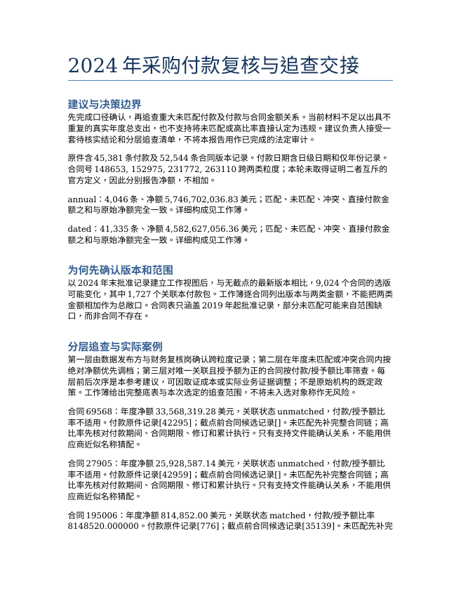
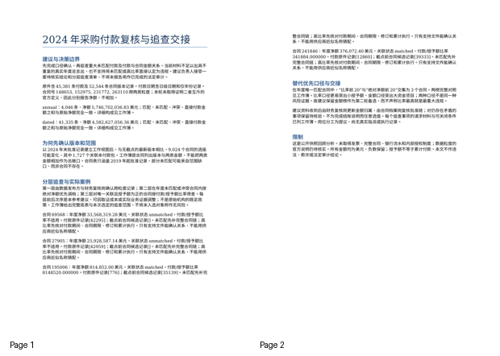
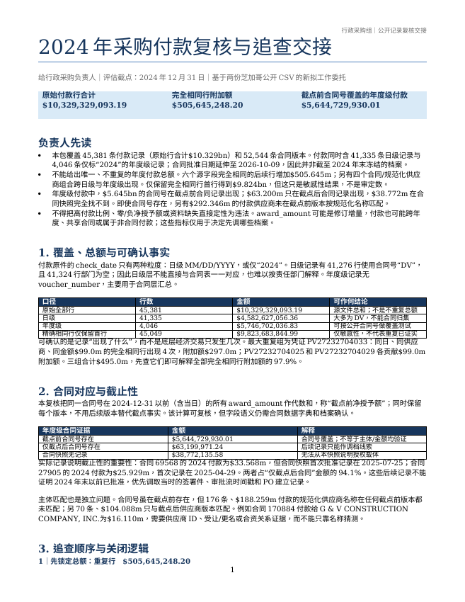
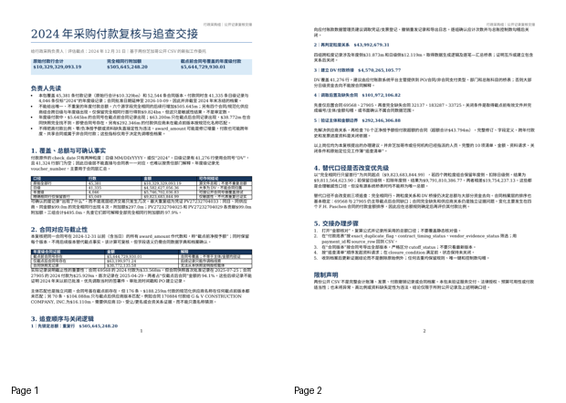
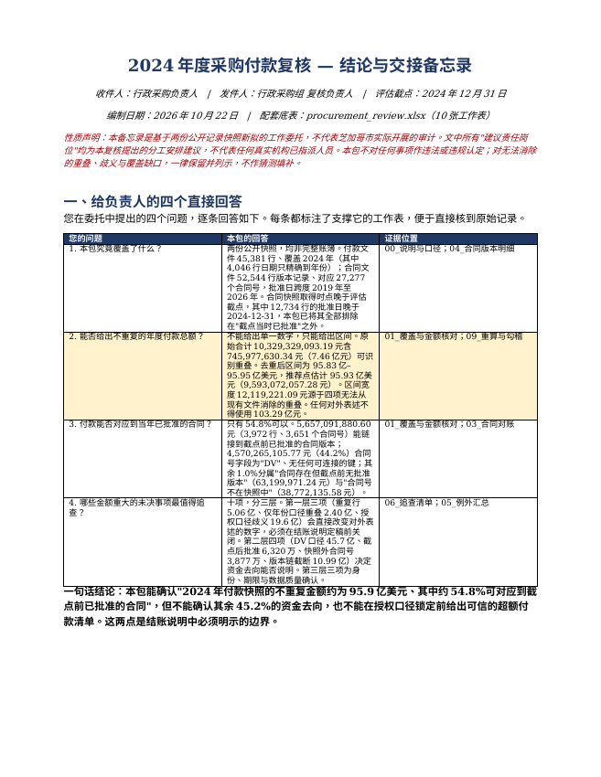
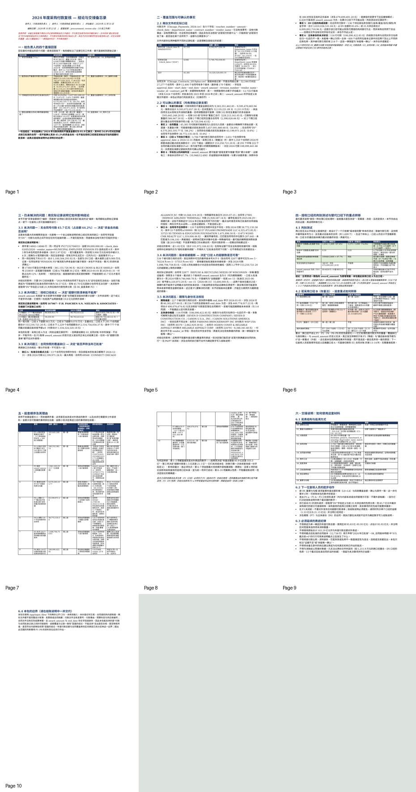

审阅草稿。输入隔离、参考复制入口及文档转换已通过；三模型解题、Gold评分与难度校准尚未完成。
年终采购付款复核与追查交接
你是行政采购组的复核负责人。我们需要在准备2024年结账说明前，弄清随附芝加哥公开付款与合同快照能支持哪些支出结论，以及哪些项目值得先调取合同档案。请提交一套可以交给下一位复核人员继续办理的材料。这是基于公开记录新拟的工作委托，不代表芝加哥市实际开展的审计。
负责人需要先知道：本包究竟覆盖了什么、能否给出不重复的年度付款总额、付款是否能对应到当年已批准的合同，以及哪些金额重大的未决事项最值得追查。不要只交一张数据异常排行榜；请说明每项优先追查如何影响我们能否解释资金去向，以及需要什么材料才能关闭问题。
交付物
procurement_review.xlsx：可复核的付款与合同工作底表、覆盖与金额核对、重要例外及有明确顺序的追查清单。每项结论须能追到原始记录，保留合同版本和未能唯一确认的情况。清单应区分不同证据缺口，并说明每个事项的金额、责任岗位建议、资料请求和关闭条件。这里的岗位建议是你提出的安排，不得假称真实机构已指派人员。
review_handover.docx：给行政采购负责人的中文结论及交接备忘录。说明可以确认的事实、仍未解决的问题、选择的追查顺序及其理由。用实际记录展示问题如何影响结论，并解释按另一种合理口径处理时，追查重点是否改变。
范围与硬约束
评估截点为2024年12月31日。随附合同记录是较晚取得的快照，不能将截点之后的信息冒称当时已获批准的事实。两份文件不是完整会计账簿、发票或合同档案；对不能消除的重叠、歧义和覆盖缺口，应保留而非猜测。不得将高付款比例或资料缺失直接定性为违法。
仅使用 /app/input_files/ 中的两份真实CSV。不得修改输入、补造交易、合同或机构内部制度。仅在 /app/output/ 提交上述两份文件。工作底表应足以让复核者依据原件重算关键金额；不要求提交特定编程语言的脚本。
题面附录：完整源文件清单
源文件清单
/app/input_files/ 下的相对路径 |
内容与口径 |
|---|---|
Chicago_Contracts_2019plus.csv |
公开合同批准记录；合同号、批准日期、供应商及授予金额，保留版本记录。 |
Chicago_Payments_2024.csv |
公开付款快照；合同号、供应商、付款金额及check_date，原件含不同日期粒度。 |
输入原件 · 2 个
| 文件 | 字节 | SHA256 |
|---|---|---|
| Chicago_Contracts_2019plus.csv | 17,806,526 | 75316a4e66b653e85784ebb4867ed27afcbfb1c795a7854d761ed7d61e6680b8 |
| Chicago_Payments_2024.csv | 3,046,394 | c1614e0503dcb85f9c9086cdad8b2d3ebb51273691480389cea5190e52606f55 |
参考产物
procurement_review.xlsx
口径与核对 · 3 行 × 7 列
| 粒度 | 原始记录数 | 原始净额USD | 已匹配 | 未匹配 | 冲突 | 直接付款 |
| annual | 4046 | 5746702036.83 | 5644729930.01 | 101972106.82 | 0 | 0 |
| dated | 41335 | 4582627056.36 | 12361950.59 | 0 | 0 | 4570265105.77 |
付款合同工作底表 · 3790 行 × 10 列
| grain | contract | status | amount | payment_records | selected_contract_records | approval | revision | award | ratio |
| annual | 100099 | matched | 481027.96 | [19273, 21177] | [33376] | 2024-01-10T00:00:00.000 | 35 | 0 | |
| annual | 100106 | matched | 90884.13 | [21263] | [36461] | 2024-05-20T00:00:00.000 | 4 | 0 | |
| annual | 100274 | matched | 616.25 | [33482] | [8405] | 2020-06-16T00:00:00.000 | 0 | 1005328.8 | 0.0006129835333474979 |
| annual | 100414 | matched | 275730 | [38747, 43419] | [38657] | 2024-10-15T00:00:00.000 | 3 | 139000 | 1.983669064748201 |
| annual | 100721 | matched | 2291478.04 | [30924] | [37455] | 2024-07-09T00:00:00.000 | 1 | 0 | |
| annual | 100786 | matched | 304601.56 | [37659] | [31639] | 2023-10-25T00:00:00.000 | 1 | 1350000 | 0.2256307851851852 |
| annual | 10082 | matched | 3700653.84 | [9359] | [39071] | 2024-11-06T00:00:00.000 | 6 | 1321288.4 | 2.800791893730392 |
| annual | 10083 | matched | 38499.96 | [3291] | [13777] | 2021-04-22T00:00:00.000 | 2 | 25000000 | 0.0015399984 |
| annual | 101191 | matched | 31782162.61 | [3098] | [35266] | 2024-04-04T00:00:00.000 | 5 | 68466826 | 0.4641979841449054 |
| annual | 101219 | matched | 71113.91 | [31716] | [30704] | 2023-08-25T00:00:00.000 | 1 | 892475 | 0.07968168296030702 |
| annual | 101223 | matched | 56003.96 | [19817] | [34144] | 2024-02-09T00:00:00.000 | 8 | 10392.4 | 5.388934221161618 |
| annual | 101451 | matched | 21754533.02 | [32287] | [33366] | 2024-01-10T00:00:00.000 | 1 | 0 | |
| annual | 101527 | matched | 124000.17 | [1728] | [38665] | 2024-10-16T00:00:00.000 | 1 | 0 | |
| annual | 102379 | matched | 37980 | [42191] | [37937] | 2024-08-09T00:00:00.000 | 1 | 70178 | 0.5411952463735074 |
| annual | 102390 | matched | 8810982.26 | [4519] | [39227] | 2024-11-19T00:00:00.000 | 7 | 9241018.1 | 0.9534644521473234 |
| annual | 102519 | matched | 243025.95 | [26863] | [3593] | 2019-08-08T00:00:00.000 | 1 | 0 | |
| annual | 102520 | matched | 12092025.96 | [41846] | [38118] | 2024-08-28T00:00:00.000 | 4 | 1880286 | 6.430950376698013 |
| annual | 102547 | matched | 360119.44 | [30707] | [36270] | 2024-05-09T00:00:00.000 | 1 | 0 | |
| annual | 102618 | matched | 653120.98 | [20568] | [36267] | 2024-05-09T00:00:00.000 | 2 | 0 | |
| annual | 102620 | matched | 1091823.51 | [40603] | [34233] | 2024-02-15T00:00:00.000 | 1 | 989244.4 | 1.103694405548316 |
付款来源映射 · 45382 行 × 5 列
| record | grain | contract | amount | check_date |
| 19273 | annual | 100099 | 240513.98 | 2024 |
| 21177 | annual | 100099 | 240513.98 | 2024 |
| 21263 | annual | 100106 | 90884.13 | 2024 |
| 33482 | annual | 100274 | 616.25 | 2024 |
| 38747 | annual | 100414 | 137865 | 2024 |
| 43419 | annual | 100414 | 137865 | 2024 |
| 30924 | annual | 100721 | 2291478.04 | 2024 |
| 37659 | annual | 100786 | 304601.56 | 2024 |
| 9359 | annual | 10082 | 3700653.84 | 2024 |
| 3291 | annual | 10083 | 38499.96 | 2024 |
| 3098 | annual | 101191 | 31782162.61 | 2024 |
| 31716 | annual | 101219 | 71113.91 | 2024 |
| 19817 | annual | 101223 | 56003.96 | 2024 |
| 32287 | annual | 101451 | 21754533.02 | 2024 |
| 1728 | annual | 101527 | 124000.17 | 2024 |
| 42191 | annual | 102379 | 37980 | 2024 |
| 4519 | annual | 102390 | 8810982.26 | 2024 |
| 26863 | annual | 102519 | 243025.95 | 2024 |
| 41846 | annual | 102520 | 12092025.96 | 2024 |
| 30707 | annual | 102547 | 360119.44 | 2024 |
截点后版本影响 · 9025 行 × 5 列
| 合同 | 截点前候选记录 | 最新候选记录 | 年度净额USD | 日级净额USD |
| 69569 | [15625] | [40078] | 0 | 0 |
| T26824 | [39792] | [47329] | 1438891.31 | 0 |
| 2670 | [35382] | [40283] | 846919.14 | 0 |
| 28953 | [36872] | [40786] | 938802.55 | 0 |
| 24608 | [365] | [46868] | 0 | 0 |
| 66065 | [32457] | [46240] | 0 | 0 |
| 86341 | [30323] | [50488] | 10765789.78 | 0 |
| 70267 | [8397] | [51028] | 0 | 0 |
| 79193 | [31327] | [46988] | 306925.8 | 0 |
| 79192 | [31319] | [47111] | 375078.59 | 0 |
| 85570 | [471] | [42757] | 0 | 0 |
| 81492 | [515] | [42062] | 417283.6 | 0 |
| 81301 | [27932] | [47975] | 3377308.82 | 0 |
| 85343 | [592] | [42747] | 0 | 0 |
| 89433 | [32414] | [47977] | 9702779.91 | 0 |
| 93462 | [11703] | [41637] | 0 | 0 |
| 17992 | [37567] | [51180] | 0 | 0 |
| 89748 | [35943] | [44997] | 4009515.28 | 0 |
| 94137 | [14167] | [43641] | 0 | 0 |
| 94138 | [13950] | [43588] | 0 | 0 |
追查与关闭条件 · 25 行 × 7 列
| priority | contract | category | amount | suggested_role | requested_evidence | close_condition |
| 1 | 148653 | 跨粒度口径待确认 | 数据发布方与财务复核岗 | 合同对应年度汇总、逐笔付款明细及口径说明 | 确认两类记录是否包含同一付款；有证据后才确定能否相加或去重 | |
| 1 | 152975 | 跨粒度口径待确认 | 数据发布方与财务复核岗 | 合同对应年度汇总、逐笔付款明细及口径说明 | 确认两类记录是否包含同一付款；有证据后才确定能否相加或去重 | |
| 1 | 231772 | 跨粒度口径待确认 | 数据发布方与财务复核岗 | 合同对应年度汇总、逐笔付款明细及口径说明 | 确认两类记录是否包含同一付款；有证据后才确定能否相加或去重 | |
| 1 | 263110 | 跨粒度口径待确认 | 数据发布方与财务复核岗 | 合同对应年度汇总、逐笔付款明细及口径说明 | 确认两类记录是否包含同一付款；有证据后才确定能否相加或去重 | |
| 2 | 69568 | 年度付款未能唯一对应截点前合同 | 33568319.28 | 合同档案与采购复核岗 | 2019年前后完整合同、批准修订链及付款归属凭证 | 可唯一确认截点前有效批准记录，或有依据解释为何本包未收录；与付款逐项核对 |
| 2 | 27905 | 年度付款未能唯一对应截点前合同 | 25928587.14 | 合同档案与采购复核岗 | 2019年前后完整合同、批准修订链及付款归属凭证 | 可唯一确认截点前有效批准记录，或有依据解释为何本包未收录；与付款逐项核对 |
| 2 | 32137 | 年度付款未能唯一对应截点前合同 | 4325472.85 | 合同档案与采购复核岗 | 2019年前后完整合同、批准修订链及付款归属凭证 | 可唯一确认截点前有效批准记录，或有依据解释为何本包未收录；与付款逐项核对 |
| 2 | 183287 | 年度付款未能唯一对应截点前合同 | 2251658.24 | 合同档案与采购复核岗 | 2019年前后完整合同、批准修订链及付款归属凭证 | 可唯一确认截点前有效批准记录，或有依据解释为何本包未收录；与付款逐项核对 |
| 2 | 15262 | 年度付款未能唯一对应截点前合同 | 2085326.2 | 合同档案与采购复核岗 | 2019年前后完整合同、批准修订链及付款归属凭证 | 可唯一确认截点前有效批准记录，或有依据解释为何本包未收录；与付款逐项核对 |
| 2 | 33725 | 年度付款未能唯一对应截点前合同 | 1471896.5 | 合同档案与采购复核岗 | 2019年前后完整合同、批准修订链及付款归属凭证 | 可唯一确认截点前有效批准记录，或有依据解释为何本包未收录；与付款逐项核对 |
| 2 | 35149 | 年度付款未能唯一对应截点前合同 | 1462099.62 | 合同档案与采购复核岗 | 2019年前后完整合同、批准修订链及付款归属凭证 | 可唯一确认截点前有效批准记录，或有依据解释为何本包未收录；与付款逐项核对 |
| 2 | 11473 | 年度付款未能唯一对应截点前合同 | 1319004.44 | 合同档案与采购复核岗 | 2019年前后完整合同、批准修订链及付款归属凭证 | 可唯一确认截点前有效批准记录，或有依据解释为何本包未收录；与付款逐项核对 |
| 2 | 33056 | 年度付款未能唯一对应截点前合同 | 1191504.45 | 合同档案与采购复核岗 | 2019年前后完整合同、批准修订链及付款归属凭证 | 可唯一确认截点前有效批准记录，或有依据解释为何本包未收录；与付款逐项核对 |
| 2 | 232068 | 年度付款未能唯一对应截点前合同 | 1129773.13 | 合同档案与采购复核岗 | 2019年前后完整合同、批准修订链及付款归属凭证 | 可唯一确认截点前有效批准记录，或有依据解释为何本包未收录；与付款逐项核对 |
| 3 | 195006 | 年度付款与授予额关系待解释 | 814852 | 采购经办与财务复核岗 | 合同期限、资金安排、修订、发票及累计付款明细 | 解释年度付款与授予额的业务关系，并核实期间和金额；不以比率单独认定违规 |
| 3 | 241846 | 年度付款与授予额关系待解释 | 376072.4 | 采购经办与财务复核岗 | 合同期限、资金安排、修订、发票及累计付款明细 | 解释年度付款与授予额的业务关系，并核实期间和金额；不以比率单独认定违规 |
| 3 | 225083 | 年度付款与授予额关系待解释 | 79998.54 | 采购经办与财务复核岗 | 合同期限、资金安排、修订、发票及累计付款明细 | 解释年度付款与授予额的业务关系，并核实期间和金额；不以比率单独认定违规 |
| 3 | 211302 | 年度付款与授予额关系待解释 | 40322889.8 | 采购经办与财务复核岗 | 合同期限、资金安排、修订、发票及累计付款明细 | 解释年度付款与授予额的业务关系，并核实期间和金额；不以比率单独认定违规 |
| 3 | 261644 | 年度付款与授予额关系待解释 | 621256.1 | 采购经办与财务复核岗 | 合同期限、资金安排、修订、发票及累计付款明细 | 解释年度付款与授予额的业务关系，并核实期间和金额；不以比率单独认定违规 |
| 3 | 257879 | 年度付款与授予额关系待解释 | 11763900.18 | 采购经办与财务复核岗 | 合同期限、资金安排、修订、发票及累计付款明细 | 解释年度付款与授予额的业务关系，并核实期间和金额；不以比率单独认定违规 |
比率优先与金额优先 · 21 行 × 6 列
| 名次 | 比率优先合同 | 付款授予额比率 | 对应年度金额 | 金额优先合同 | 对应年度金额 |
| 1 | 195006 | 8148520 | 814852 | 233859 | 361155726.96 |
| 2 | 241846 | 341884 | 376072.4 | 241011 | 298675680.54 |
| 3 | 225083 | 79998.54 | 79998.54 | 98065 | 202883343.79 |
| 4 | 211302 | 13440.96326666667 | 40322889.8 | 115455 | 118000000 |
| 5 | 261644 | 1781.124139908257 | 621256.1 | 136811 | 91234752.04 |
| 6 | 257879 | 1633.875025 | 11763900.18 | 167067 | 90763613.22 |
| 7 | 167067 | 1531.875328607595 | 90763613.22 | 98447 | 76848707.53 |
| 8 | 244632 | 1011.7151575 | 8093721.26 | 198906 | 72256355.84 |
| 9 | 210665 | 413.239435 | 13223661.92 | 32227 | 71290224.64 |
| 10 | 129033 | 261.7051077071026 | 19049514.79 | 260712 | 70996308.16 |
| 11 | 241834 | 242.26418 | 242264.18 | 96319 | 60444681.16 |
| 12 | 116668 | 194.5117991422742 | 4671589.88 | 33232 | 55224417.93 |
| 13 | 214700 | 123.7767537178092 | 682505.02 | 25743 | 50848176.61 |
| 14 | 187439 | 108.7897584541063 | 1035896.08 | 174908 | 41681789.29 |
| 15 | 153526 | 104.7353144936204 | 5043382.44 | 211620 | 41022164.42 |
| 16 | 187419 | 97.6963401465484 | 1013306.44 | 211302 | 40322889.8 |
| 17 | 177310 | 96.02853548835448 | 38635621.62 | 177310 | 38635621.62 |
| 18 | 183798 | 93.45622816345131 | 492177.88 | 87486 | 37726659.27 |
| 19 | 214765 | 90.17320275661952 | 248607.52 | 93627 | 35216420.01 |
| 20 | 211699 | 88.19 | 22047.5 | 52685 | 34095120.32 |
使用说明 · 8 行 × 2 列
| 事项 | 处理 |
| 截点 | 2024-12-31；晚取得快照的回顾复核，不是证明当时可得信息 |
| 版本选择假设 | 取截点前批准时间最新、再取数值修订号最大；同顺序内容不同保留候选。不是对合同法律效力的终局裁定。 |
| 来源记录编号 | CSV解析后的记录序号，表头为1；多行字段可能使物理行号不同。工作底表列表指向对应原件。 |
| 比率 | 付款净额/授予额，无百分号，1表示100%；授予额非正或缺失不计算。 |
| 原始金额 | 美元；保留负数付款。不同粒度不合并为真实总支出。 |
| 责任岗位 | 本参考提出的交接建议，不代表真实机构已指派。 |
| 限制 | 付款无发票细节；合同快照始于2019年；缺记录不证明违规。官方元数据接口本轮403，年度行含义尚需发布方核实。 |
review_handover.docx

完整正文
2024 年采购付款复核与追查交接 建议与决策边界 先完成口径确认，再追查重大未匹配付款及付款与合同金额关系。当前材料不足以出具不 重复的真实年度总支出，也不支持将未匹配或高比率直接认定为违规。建议负责人接受一 套待核实结论和分层追查清单，不将本报告用作已完成的法定审计。 原件含45,381 条付款及52,544 条合同版本记录。付款日期含日级日期和仅年份记录。 合同号148653, 152975, 231772, 263110 跨两类粒度；本轮未取得证明二者互斥的 官方定义，因此分别报告净额，不相加。 annual：4,046 条、净额5,746,702,036.83 美元；匹配、未匹配、冲突、直接付款金 额之和与原始净额完全一致。详细构成见工作簿。 dated：41,335 条、净额4,582,627,056.36 美元；匹配、未匹配、冲突、直接付款金 额之和与原始净额完全一致。详细构成见工作簿。 为何先确认版本和范围 以2024 年末批准记录建立工作视图后，与无截点的最新版本相比，9,024 个合同的选版 可能变化，其中1,727 个关联本付款包。工作簿逐合同列出版本与两类金额，不能把两类 金额相加作为总敞口。合同表只涵盖2019 年起批准记录，部分未匹配可能来自范围缺 口，而非合同不存在。 分层追查与实际案例 第一层由数据发布方与财务复核岗确认跨粒度记录；第二层在年度未匹配或冲突合同内按 绝对净额优先调档；第三层对唯一关联且授予额为正的合同按付款/授予额比率筛查。每 层前后次序是本参考建议，可因取证成本或实际业务证据调整；不是原始机构的既定政 策。工作簿给出完整底表与本次选定的追查范围，不将未入选对象称作无风险。 合同69568：年度净额33,568,319.28 美元，关联状态unmatched，付款/授予额比 率不适用。付款原件记录[42295]；截点前合同候选记录[]。未匹配先补完整合同链；高 比率先核对付款期间、合同期限、修订和累计执行。只有支持文件能确认关系，不能用供 应商近似名称猜配。 合同27905：年度净额25,928,587.14 美元，关联状态unmatched，付款/授予额比 率不适用。付款原件记录[42959]；截点前合同候选记录[]。未匹配先补完整合同链；高 比率先核对付款期间、合同期限、修订和累计执行。只有支持文件能确认关系，不能用供 应商近似名称猜配。 合同195006：年度净额814,852.00 美元，关联状态matched，付款/授予额比率 8148520.000000。付款原件记录[776]；截点前合同候选记录[35139]。未匹配先补完 整合同链；高比率先核对付款期间、合同期限、修订和累计执行。只有支持文件能确认关 系，不能用供应商近似名称猜配。 合同241846：年度净额376,072.40 美元，关联状态matched，付款/授予额比率 341884.000000。付款原件记录[12860]；截点前合同候选记录[39333]。未匹配先补 完整合同链；高比率先核对付款期间、合同期限、修订和累计执行。只有支持文件能确认 关系，不能用供应商近似名称猜配。 替代优先口径与交接 “在年度唯一匹配合同中， 比率前20” “与 绝对净额前20”交集为3 个合同。两榜完整对照 见工作簿。比率口径更易突出小授予额，金额口径突出大资金项目；两种口径不是同一种 风险证据。故建议保留金额榜作为第二轮备选，而不声称比率最高就是最重大违规。 建议资料收到后由财务复核岗更新金额归属，由合同档案岗复核批准链；对仍存在矛盾的 事项保留待核验，不为完成结账说明而任意选值。每个追查事项的请求材料与可关闭条件 已列工作簿。岗位分工为提议，尚无真实指派或执行记录。 限制 这是公开快照回顾分析。未取得发票、完整合同、银行流水和内部授权制度；数据粒度的 官方说明仍待核实。所有金额均为美元，负数保留；授予额不等于累计付款。本文不作违 法、欺诈或法定审计结论。
全部页面

模型产物与评分
未使用历史版本的分数。
gpt-5.6-sol
使用说明 · 29 行 × 8 列
| 2024年芝加哥公开付款与合同复核工作底表 | |||||||
| 目的与边界 | 本包是基于两份公开CSV的新拟复核，不代表芝加哥市实际审计。评估截点为2024-12-31；合同CSV含截点后记录，后续记录仅作调档线索。付款CSV不是完整总账、发票或合同档案。 | ||||||
| 核心结论 | 原始付款行合计$10,329,329,093.19。存在$505,645,248.20完全相同行附加额及跨粒度重叠迹象，不能从本包给出唯一“不重复年度付款总额”。精确相同行仅保留首行的敏感性数为$9,823,683,844.99，但不应冒称审定数。 | ||||||
| 合同金额口径 | “截点前净授予额”=同合同号、approval_date≤2024-12-31的全部award_amount代数和。该字段可能是增量修订而非合同上限；因此付款比例只作调档指标，不作合规结论。所有52,544个版本均保留在“合同版本”。 | ||||||
| 可追溯性 | 付款底表payment_id映射CSV物理source_row；合同版本contract_version_id同理。筛选状态字段后可回到原始六列/十九列。原CSV未修改。 | ||||||
| 建议复核顺序 | 先解决重复和粒度（决定总额），再解决DV桥接（决定大部分日级资金去向），随后调取仅后置/缺失合同、供应商关系及高付款比例合同档案。岗位均为本复核建议，不是实际机构指派。 | ||||||
| 金额展示 | 金额为美元；括号/负数均保留。Excel“金额核对”含公式和静态核对值。若打开后公式未刷新，可在Excel中全表重算。 | ||||||
金额核对 · 17 行 × 11 列
| section | metric | basis | row_count | amount | interpretation | 公式复算 | 静态核对值 | 差额 | ||
| 范围 | 付款源文件 | Chicago_Payments_2024.csv | 45381 | 10329329093.19 | 仅该快照；check_date均为2024或2024年日期 | 付款底表金额合计 | 10329329093.19 | |||
| 范围 | 合同源文件 | Chicago_Contracts_2019plus.csv | 52544 | 68580858443.2 | 批准日期2019-01-02至2026-10-09；含截点后 | 后续完全相同行金额 | 505645248.1999999 | |||
| 日期粒度 | 日级付款 | MM/DD/YYYY | 41335 | 4582627056.36 | 41,276行合同号DV | 合同版本金额合计 | 68580858443.2 | |||
| 日期粒度 | 年度级付款 | 仅“2024” | 4046 | 5746702036.83 | 无凭证号；按合同/供应商年度记录 | |||||
| 原始总额 | 全部付款行 | 直接求和 | 45381 | 10329329093.19 | 不是不重复总额 | |||||
| 重复敏感性 | 后续完全相同行 | 六个源字段全同且保留首行 | 332 | 505645248.1999999 | 289组，332条附加行 | |||||
| 重复敏感性 | 仅保留完全相同行首行 | 原始总额-后续相同行 | 45049 | 9823683844.99 | 敏感性，不代表已证实重复 | |||||
| 粒度敏感性 | 跨粒度重叠：日级金额 | 同合同+规范化供应商 | 51 | 12119221.09 | 4组；不能自行认定重复 | |||||
| 粒度敏感性 | 跨粒度重叠：年度金额 | 同合同+规范化供应商 | 8 | 31873458.22 | 4组；年度侧含供应商标点变体 | |||||
| 替代口径 | 完全相同行首行+跨粒度保留年度侧 | 扣除重叠组日级金额 | 9811564623.9 | 合理但未经源系统证实 | ||||||
| 替代口径 | 完全相同行首行+跨粒度保留日级侧 | 扣除重叠组年度金额 | 9791810386.77 | 合理但未经源系统证实 | ||||||
| 合同对应 | 年度级付款：截点前合同号存在 | 合同号层面 | 3913 | 5644729930.01 | 不等于供应商或金额均已验证 | |||||
| 合同对应 | 年度级付款：仅截点后合同号存在 | 合同号层面 | 13 | 63199971.24 | 不得倒推截点前批准 | |||||
| 合同对应 | 年度级付款：快照无合同记录 | 合同号层面 | 120 | 38772135.58 | 需确认范围或调档 | |||||
| 主体对应 | 截点前合同号存在但供应商未在截点前版本匹配 | 规范化名称层面 | 246 | 292346306.88 | 其中70行仅后续版本匹配 | |||||
| 字段完整性 | 部门名称空白 | 付款行 | 42534 | 6170671047.42 | 限制按责任部门解释 |
追查清单 · 11 行 × 11 列
| followup_id | priority | gap_type | question | amount_exposed | actual_record_example | suggested_role_not_assignment | records_request | closure_condition | why_it_matters | trace_locator |
| F01 | 1 | 总额/重复 | 完全相同行是否为重复付款或公开导出重复 | 505645248.1999999 | 全部289组；其中养老基金三凭证贡献$495.0m | 建议：应付账款数据管理员（非实际指派） | 原始付款明细、凭证/支票登记、撤销与重发记录、公开数据导出规则及批次日志 | 逐组确认应计次数；以交易唯一键重算并与总账控制数勾稽 | 决定能否从原始$10.329bn形成不重复年度总额；未关闭前只能给敏感性区间 | P00001等；付款底表筛“后续完全相同行” |
| F02 | 2 | 总额/粒度 | 年度级与日级记录可能重叠 | 43992679.31 | 合同148653、152975、231772、263110；年度$31.873m，日级$12.119m | 建议：开放数据平台主管+应付账款数据管理员（非实际指派） | 两类数据集定义、汇总生成逻辑、四合同逐笔凭证和年度汇总底稿 | 证明两层互斥，或建立可复核的包含关系并只保留一次 | 决定替代去重口径是$9.812bn还是$9.792bn附近，并影响合同付款汇总 | 跨粒度重叠表全部4行 |
| F03 | 3 | 合同覆盖 | 日级付款合同号几乎均为DV，无法对应特定合同 | 4570265105.77 | 41,276行；精确去重后约$4.570bn以下，覆盖养老金、税款、银行等多类用途 | 建议：应付账款系统平台主管（非实际指派） | DV编码字典、付款到PO/合同/非合同支付类型的桥表、总账科目与部门字段、抽样凭证包 | 每笔归入合同号或有依据的非合同类别；金额与控制总额勾稽 | 当前不能用合同快照解释日级层资金去向；也是部门字段大面积空白的主因 | 付款底表筛合同号DV |
| F04 | 4 | 截止性 | 2024付款对应合同仅在截点后快照出现 | 63199971.24 | 13合同；69568 $33.568m，27905 $25.929m，15262 $2.085m | 建议：合同档案管理员（非实际指派） | 2024-12-31前签署/批准件、审批流时间戳、PO建立记录；后续修订沿革 | 取得截点前有效批准证据并核对供应商/金额，或确认当时无批准并修正结论 | 后续记录只能指向调档线索，不能倒推当时批准；前两项占本类94.1% | 合同例外表筛“仅截点后合同记录” |
| F05 | 5 | 合同覆盖 | 合同快照完全无对应记录 | 38772135.58 | 120合同；32137 $4.325m，183287 $2.252m，33725 $1.472m | 建议：合同档案管理员（非实际指派） | 合同/补助/租赁或其他法律文件、PO主数据、编号交叉表、付款依据 | 找到截至截点有效文件并完成编号桥接，或书面确认不属该合同数据范围 | 不关闭则无法说明这些年度级付款的授权载体或快照覆盖边界 | 合同例外表筛“快照无合同记录” |
| F06 | 6 | 主体对应 | 合同号存在但付款供应商未在截点前版本匹配 | 292346306.88 | 176行$188.259m从未匹配；另70行$104.088m只在后续版本匹配 | 建议：供应商主数据管理员+合同管理员（非实际指派） | 供应商ID交叉表、受让/更名/合资关系文件、截至截点合同供应商页、付款收款方主档 | 用稳定供应商ID或法律文件建立一对一/有依据关系，保留多供应商情形 | 合同号匹配本身不足以证明钱付给获授主体；影响$292.346m的对应结论 | 付款底表筛供应商证据状态 |
| F07 | 7 | 金额边界 | 正净授予额合同中付款高于截点前净授予额 | 43794085.93 | 70合同；167067超$9.833m，211302超$6.238m，81226超$3.684m | 建议：合同分析员（非实际指派） | 完整合同与修订、授予金额字段定义、跨年度付款历史、发票/进度款、共享合同或多供应商分配说明 | 重建有效上限及适用期间；证明付款在范围内或记录差异处置 | 高比例不等于违规，但若金额字段可比，则影响当年付款能否由截点前授权覆盖 | 合同例外表筛差额>0且净授予额>0 |
| F08 | 8 | 版本含义 | 付款合同的截点前净授予额为零或负数 | 108099441.68 | 222合同（按合同级聚合）；合同32877付款$9.747m、72543 $7.245m、82444 $5.595m | 建议：合同数据平台主管（非实际指派） | 版本金额字段数据字典、基准授予额和修订增减逻辑、注销/结清状态、原合同扫描件 | 确认award_amount是增量还是状态值，并重建截点上限；与档案一致 | 若错误把修订增量当总额或反之，会系统性扭曲超额判断和追查排序 | 合同例外表筛截点前净授予额<=0 |
| F09 | 9 | 版本/截止性 | 截点前合同其后仍有修订 | 3050836800.61 | 1,727个付款合同涉及约$3.051bn年度级付款；后续修订净额约$5.598bn | 建议：合同档案管理员（非实际指派） | 每份合同版本生效/批准日期、修订原因、截至2024-12-31有效版本包 | 明确后续版本不用于证明截点事实；仅在有追溯效力的档案证据下调整 | 避免用较晚快照“修复”2024年覆盖缺口或付款比例 | 合同汇总表筛截点后版本数>0 |
| F10 | 10 | 字段完整性 | 部门字段缺失限制责任归属 | 6170671047.42 | 42,534行；日级41,324行，年度级1,210行 | 建议：总账/主数据管理员（非实际指派） | 付款到部门/基金/科目映射、凭证头和明细、组织主数据 | 全部重大付款取得责任部门或可复核非部门分类，汇总与控制数一致 | 即使金额去重，仍不能按责任单位解释资金去向或分派档案请求 | 付款底表筛部门名称空白 |
付款底表 · 45382 行 × 16 列
| payment_id | source_row | voucher_number | amount | check_date | department_name | amount_num | contract_number | vendor_name | date_grain | exact_duplicate_group | exact_duplicate_flag | contract_timing_status | vendor_evidence_status | vendor_norm | exact_duplicate_seq |
| P00001 | 2 | PV31243101781 | 2250 | 09/06/2024 | 2250 | DV | TRANSUNION RISK & ALTERNATIVE DATA SOLUTIONS INC | 日级 | 21122 | 否/首行 | DV/非特定合同号 | 不适用 | TRANSUNIONRISKALTERNATIVEDATASOLUTIONSINC | 1 | |
| P00002 | 3 | Multiple | 2479.06 | 01/22/2024 | 2479.06 | DV | COMCAST OF CHICAGO INC | 日级 | 4552 | 否/首行 | DV/非特定合同号 | 不适用 | COMCASTOFCHICAGOINC | 1 | |
| P00003 | 4 | PV27242768293 | 47.4 | 06/17/2024 | 47.4 | DV | DOROTHY KING | 日级 | 13760 | 否/首行 | DV/非特定合同号 | 不适用 | DOROTHYKING | 1 | |
| P00004 | 5 | PV15241552696 | 459.24 | 08/09/2024 | 459.24 | DV | QUILL CORPORATION | 日级 | 7316 | 否/首行 | DV/非特定合同号 | 不适用 | QUILLCORPORATION | 1 | |
| P00005 | 6 | PV62246200332 | 500 | 06/03/2024 | 500 | DV | BRENDA WATERS | 日级 | 33512 | 否/首行 | DV/非特定合同号 | 不适用 | BRENDAWATERS | 1 | |
| P00006 | 7 | PV91249101027 | 378 | 12/26/2024 | 378 | DV | ALMA LIZBETH GAMEZ | 日级 | 41233 | 否/首行 | DV/非特定合同号 | 不适用 | ALMALIZBETHGAMEZ | 1 | |
| P00007 | 8 | PV41244198497 | 1500 | 07/31/2024 | 1500 | DV | RAMI NASHASHIBI | 日级 | 27234 | 否/首行 | DV/非特定合同号 | 不适用 | RAMINASHASHIBI | 1 | |
| P00008 | 9 | 89509.14 | 2024 | OFFICE OF EMERGENCY MANAGEMENT AND COMMUNICATIONS | 89509.14 | 29702 | MIDWAY TRAILER SALES & SERVICE INC | 年度级 | 3854 | 否/首行 | 截点前存在合同记录 | 截点前版本供应商匹配 | MIDWAYTRAILERSALESSERVICEINC | 1 | |
| P00009 | 10 | PV25242580147 | 260.69 | 08/02/2024 | 260.69 | DV | KROEGER JAMES | 日级 | 10317 | 否/首行 | DV/非特定合同号 | 不适用 | KROEGERJAMES | 1 | |
| P00010 | 11 | PV23242300182 | 600 | 04/05/2024 | 600 | DV | STOPTIME LIMITED | 日级 | 8574 | 否/首行 | DV/非特定合同号 | 不适用 | STOPTIMELIMITED | 1 | |
| P00011 | 12 | PV01240100161 | 548.08 | 07/18/2024 | 548.08 | DV | GBR ENTERPRISES LLC | 日级 | 5446 | 否/首行 | DV/非特定合同号 | 不适用 | GBRENTERPRISESLLC | 1 | |
| P00012 | 13 | PV88248800893 | 22552.97 | 07/12/2024 | 22552.97 | DV | ILLINOIS DEPARTMENT OF TRANS. | 日级 | 40441 | 否/首行 | DV/非特定合同号 | 不适用 | ILLINOISDEPARTMENTOFTRANS | 1 | |
| P00013 | 14 | 109324.43 | 2024 | 109324.43 | 177428 | SALVATION ARMY DHQ | 年度级 | 229 | 否/首行 | 截点前存在合同记录 | 未匹配 | SALVATIONARMYDHQ | 1 | ||
| P00014 | 15 | PV62246200123 | 500 | 03/06/2024 | 500 | DV | JENNIFER A. SCHAFFER | 日级 | 33307 | 否/首行 | DV/非特定合同号 | 不适用 | JENNIFERASCHAFFER | 1 | |
| P00015 | 16 | 98503.38 | 2024 | 98503.38 | 248860 | E. G. WOODE, L3C | 年度级 | 4021 | 否/首行 | 截点前存在合同记录 | 截点前版本供应商匹配 | EGWOODEL3C | 1 | ||
| P00016 | 17 | PV31243170744 | 64936.93 | 09/06/2024 | 64936.93 | DV | FOX ROTHSCHILD LLP | 日级 | 22431 | 否/首行 | DV/非特定合同号 | 不适用 | FOXROTHSCHILDLLP | 1 | |
| P00017 | 18 | PV38233801359 | 3200 | 02/05/2024 | 3200 | DV | MARQUEE EVENT GROUP INC | 日级 | 23615 | 否/首行 | DV/非特定合同号 | 不适用 | MARQUEEEVENTGROUPINC | 1 | |
| P00018 | 19 | PV88238802417 | 758 | 02/27/2024 | 758 | DV | ILLINOIS SECTION AMERICAN WATER WORKS ASSOCIATION | 日级 | 40184 | 否/首行 | DV/非特定合同号 | 不适用 | ILLINOISSECTIONAMERICANWATERWORKSASSOCIATION | 1 | |
| P00019 | 20 | PVPR242713644 | 2165 | 07/16/2024 | 2165 | DV | CHICAGO POLICE CAPTAINS ASSOC | 日级 | 43510 | 否/首行 | DV/非特定合同号 | 不适用 | CHICAGOPOLICECAPTAINSASSOC | 1 | |
| P00020 | 21 | PV27242773976 | 50 | 08/20/2024 | 50 | DV | BARBARA SUSAN SHEPARD | 日级 | 17389 | 否/首行 | DV/非特定合同号 | 不适用 | BARBARASUSANSHEPARD | 1 |
合同版本 · 52545 行 × 24 列
| contract_version_id | source_row | purchase_order_description | purchase_order_contract_number | revision_number | specification_number | contract_type | start_date | end_date | approval_date | department | vendor_name | vendor_id | address_1 | address_2 | city |
| C00001 | 2 | BACP-CORP-NBDC: | 91266 | 1 | 724873 | DELEGATE AGENCY | 2019-01-01T00:00:00.000 | 2020-12-31T00:00:00.000 | 2019-01-02T00:00:00.000 | DEPARTMENT OF BUSINESS AFFAIRS AND CONSUMER PROTECTION | ANDERSONVILLE CHAMBER OF COMMERCE | 102486871M | 5153 N CLARK ST # 204 | CHICAGO | |
| C00002 | 3 | BACP-CORP-NBDC: | 91267 | 1 | 724873 | DELEGATE AGENCY | 2019-01-01T00:00:00.000 | 2020-12-31T00:00:00.000 | 2019-01-02T00:00:00.000 | DEPARTMENT OF BUSINESS AFFAIRS AND CONSUMER PROTECTION | FAR SOUTH COMMUNITY DEVELOPMENT CORPORATION | 104099185M | 9923 S HALSTED ST STE D | CHICAGO | |
| C00003 | 4 | CDGA BACP - Neighborhood Business Development Centers (NBDC) - Innovation Centers | 91322 | 0 | 724877 | DELEGATE AGENCY | 2019-01-01T00:00:00.000 | 2020-12-31T00:00:00.000 | 2019-01-02T00:00:00.000 | DEPARTMENT OF BUSINESS AFFAIRS AND CONSUMER PROTECTION | CHICAGO URBAN LEAGUE DEV CORP | 31311292X | 4510 S MICHIGAN AVENUE EFT | CHICAGO | |
| C00004 | 5 | BACP-CORP-NBDC: 2017-2018 NEIGHBORHOOD BUSINESS DEVELOPMENT CENTER | 51137 | 2 | 121713 | DELEGATE AGENCY | 2017-01-01T00:00:00.000 | 2019-01-02T00:00:00.000 | 2019-01-02T00:00:00.000 | DEPT OF BUSINESS AFFAIRS & CONSUMER PROTECTION | QUAD COMMUNITIES DVLPMNT CORP NFP | 102609541V | 4210 S BERKELEY AVE | CHICAGO | |
| C00005 | 6 | 78111 | 3 | 697818 | DELEGATE AGENCY | 2019-01-02T00:00:00.000 | DEPARTMENT OF FAMILY AND SUPPORT SERVICES | CLARETIAN ASSOCIATES|CLEANED-UP | 93175047L | 9108 S BRANDON AVENUE EFT | CHICAGO | ||||
| C00006 | 7 | DFSS-CORP-YS-CB: CORP - YOUTH SERVICES - CHICAGOBILITY | 78110 | 3 | 697818 | DELEGATE AGENCY | 2019-01-02T00:00:00.000 | DEPARTMENT OF FAMILY AND SUPPORT SERVICES | BACK OF THE YARDS NEIGHBORHOOD COUNCIL | 102479506V | 1823 W 47TH ST FL 2ND | CHICAGO | |||
| C00007 | 8 | 78298 | 2 | 701539 | DELEGATE AGENCY | 2019-01-02T00:00:00.000 | DEPARTMENT OF FAMILY AND SUPPORT SERVICES | CATHOLIC CHARITIES OF THE ARCHDIOCESE OF CHICAGO | 102484615A | 1 E BANKS ST | CHICAGO | ||||
| C00008 | 9 | CDGA BACP - Neighborhood Bus Dev Centers (NBDC) - Generalist | 91374 | 0 | 724860 | DELEGATE AGENCY | 2019-01-01T00:00:00.000 | 2020-12-31T00:00:00.000 | 2019-01-02T00:00:00.000 | DEPARTMENT OF BUSINESS AFFAIRS AND CONSUMER PROTECTION | NORTH BRANCH WORKS | 102527385L | 1866 N MARCEY ST | CHICAGO | |
| C00009 | 10 | CDGA BACP - Neighborhood Bus Dev Centers (NBDC) - Generalist | 91376 | 0 | 724860 | DELEGATE AGENCY | 2019-01-01T00:00:00.000 | 2020-12-31T00:00:00.000 | 2019-01-02T00:00:00.000 | DEPT OF BUSINESS AFFAIRS & CONSUMER PROTECTION | WICKER PARK BUCKTOWN CHAMBER OF COMMERCE | 102489749E | 1414 N ASHLAND AVENUE EFT XX 7095 | CHICAGO | |
| C00010 | 11 | CDGA BACP - Neighborhood Bus Dev Centers (NBDC) - Special Projects | 91333 | 0 | 724865 | DELEGATE AGENCY | 2019-01-01T00:00:00.000 | 2020-12-31T00:00:00.000 | 2019-01-02T00:00:00.000 | DEPARTMENT OF BUSINESS AFFAIRS AND CONSUMER PROTECTION | FAR SOUTH COMMUNITY DEVELOPMENT CORPORATION | 104099185M | 9923 S HALSTED ST STE D | CHICAGO | |
| C00011 | 12 | CDGA BACP - Neighborhood Bus Dev Centers (NBDC) - Spec Projects | 91329 | 0 | 724865 | DELEGATE AGENCY | 2019-01-01T00:00:00.000 | 2020-12-31T00:00:00.000 | 2019-01-02T00:00:00.000 | DEPARTMENT OF BUSINESS AFFAIRS AND CONSUMER PROTECTION | CHICAGO LAWYERS COMMITTEE FOR CIVIL RIGHTS | 102476987H | 100 N LA SALLE ST | CHICAGO | |
| C00012 | 13 | CDGA BACP - Neighborhood Bus Dev Centers (NBDC) - Generalist | 91396 | 0 | 724860 | DELEGATE AGENCY | 2019-01-01T00:00:00.000 | 2020-12-31T00:00:00.000 | 2019-01-02T00:00:00.000 | DEPARTMENT OF BUSINESS AFFAIRS AND CONSUMER PROTECTION | UPTOWN OF CHAMBER OF COMMERCE | 105468054A | 4753 N BROADWAY STE 822 | CHICAGO | |
| C00013 | 14 | CDGA BACP - Neighborhood Business Development Centers (NBDC)- Innovation Centers | 91318 | 0 | 724877 | DELEGATE AGENCY | 2019-01-01T00:00:00.000 | 2020-12-31T00:00:00.000 | 2019-01-02T00:00:00.000 | DEPARTMENT OF BUSINESS AFFAIRS AND CONSUMER PROTECTION | WEST RIDGE CHAMBER OF COMMERCE | 105461892A | 6445 N WESTERN AVE STE 304 EFT | CHICAGO | |
| C00014 | 15 | CDGA BACP - Neighborhood Bus Dev Centers (NBDC) - Generalist | 91421 | 0 | 724860 | DELEGATE AGENCY | 2019-01-01T00:00:00.000 | 2020-12-31T00:00:00.000 | 2019-01-02T00:00:00.000 | DEPT OF BUSINESS AFFAIRS & CONSUMER PROTECTION | NORWOOD PARK CHAMBER OF COMMERCE | 31330435P | 6046 N AVONDALE AVE | CHICAGO | |
| C00015 | 16 | CDGA BACP - Neighborhood Bus Dev Centers (NBDC) - Generalist | 91419 | 0 | 724860 | DELEGATE AGENCY | 2019-01-01T00:00:00.000 | 2020-12-31T00:00:00.000 | 2019-01-02T00:00:00.000 | DEPT OF BUSINESS AFFAIRS & CONSUMER PROTECTION | SOUTH SHORE CHAMBER, INC | 102526053A | 1750 E 71 TH ST | CHICAGO | |
| C00016 | 17 | CDGA BACP - Neighborhood Bus Dev Centers (NBDC) - Generalist | 91415 | 0 | 724860 | DELEGATE AGENCY | 2019-01-01T00:00:00.000 | 2020-12-31T00:00:00.000 | 2019-01-02T00:00:00.000 | DEPARTMENT OF BUSINESS AFFAIRS AND CONSUMER PROTECTION | HYDE PARK CHAMBER OF COMMERCE | 93448776X | 5501 S EVERETT AVENUE EFT | CHICAGO | |
| C00017 | 18 | CDGA BACP - Neighborhood Bus Dev Centers (NBDC) - Generalist | 91391 | 0 | 724860 | DELEGATE AGENCY | 2019-01-01T00:00:00.000 | 2020-12-31T00:00:00.000 | 2019-01-02T00:00:00.000 | DEPT OF BUSINESS AFFAIRS & CONSUMER PROTECTION | FAR SOUTH COMMUNITY DEVELOPMENT CORPORATION | 104099185M | 9923 S HALSTED ST STE D | CHICAGO | |
| C00018 | 19 | CDGA BACP - Neighborhood Bus Dev Centers (NBDC) - Generalist | 91383 | 0 | 724860 | DELEGATE AGENCY | 2019-01-01T00:00:00.000 | 2020-12-31T00:00:00.000 | 2019-01-02T00:00:00.000 | DEPARTMENT OF BUSINESS AFFAIRS AND CONSUMER PROTECTION | SOUTH LOOP CHAMBER OF COMMERCE | 31328632Z | 3538 S HALSTED ST | CHICAGO | |
| C00019 | 20 | CDGA BACP Neighborhood Bus Dev Centers (NBDC) - Spec Projects | 91328 | 0 | 724865 | DELEGATE AGENCY | 2019-01-01T00:00:00.000 | 2020-12-31T00:00:00.000 | 2019-01-02T00:00:00.000 | DEPARTMENT OF BUSINESS AFFAIRS AND CONSUMER PROTECTION | CHICAGOLAND CHAMBER OF COMMERCE | 98997121P | THE WRIGLEY BUILDING | 410 N MICHIGAN AVE STE 900 | CHICAGO |
| C00020 | 21 | CDGA BACP - Neighborhood Bus Dev Centers (NBDC) - Special Projects | 91334 | 0 | 724865 | DELEGATE AGENCY | 2019-01-01T00:00:00.000 | 2020-12-31T00:00:00.000 | 2019-01-02T00:00:00.000 | DEPARTMENT OF BUSINESS AFFAIRS AND CONSUMER PROTECTION | LOCAL INITIATIVES SUPPORT CORPORATION | 102634426A | 10 S RIVERSIDE PLAZA EFT | CHICAGO |
合同汇总 · 27278 行 × 17 列
| contract_number | all_version_count | all_award_net | first_approval | latest_approval | all_vendor_count | pre_version_count | asof_award_net | asof_first_approval | asof_last_approval | asof_vendor_count | asof_vendor_names | post_version_count | post_award_net | first_post_approval | post_vendor_names |
| 100000 | 1 | 381478 | 2019-08-08 00:00:00 | 2019-08-08 00:00:00 | 1 | 1 | 381478 | 2019-08-08 00:00:00 | 2019-08-08 00:00:00 | 1 | SGA YOUTH & FAMILY SERVICES, NFP|CLEANED-UP | 0 | 0 | ||
| 100008 | 1 | 900000 | 2019-04-22 00:00:00 | 2019-04-22 00:00:00 | 1 | 1 | 900000 | 2019-04-22 00:00:00 | 2019-04-22 00:00:00 | 1 | AGELESS EYE CARE PC | 0 | 0 | ||
| 100009 | 1 | 532000 | 2019-04-22 00:00:00 | 2019-04-22 00:00:00 | 1 | 1 | 532000 | 2019-04-22 00:00:00 | 2019-04-22 00:00:00 | 1 | TROPICAL OPTICAL CORP. | 0 | 0 | ||
| 100034 | 2 | 1602000 | 2019-05-13 00:00:00 | 2019-10-29 00:00:00 | 1 | 2 | 1602000 | 2019-05-13 00:00:00 | 2019-10-29 00:00:00 | 1 | SAFER FOUNDATION 01 | 0 | 0 | ||
| 100044 | 1 | 150000 | 2019-04-22 00:00:00 | 2019-04-22 00:00:00 | 1 | 1 | 150000 | 2019-04-22 00:00:00 | 2019-04-22 00:00:00 | 1 | TRAVELERS & IMMIGRANTS AID'S HEARTLAND ALLIANCE FOR HUMAN NEEDS & HUMAN RIGHTS DBA HEARTLAND ALLIANCE FOR HUMAN NEEDS & HUMAN RIGHTS | 0 | 0 | ||
| 100099 | 36 | 59188123.4 | 2019-05-01 00:00:00 | 2024-01-10 00:00:00 | 1 | 36 | 59188123.4 | 2019-05-01 00:00:00 | 2024-01-10 00:00:00 | 1 | F.H. PASCHEN S.N. NIELSEN & ASSOCIATES, LLC | F.H. PASCHEN, S.N. NIELSEN & ASSOCIATES, LLC | 0 | 0 | ||
| 100101 | 1 | 750000 | 2019-04-23 00:00:00 | 2019-04-23 00:00:00 | 1 | 1 | 750000 | 2019-04-23 00:00:00 | 2019-04-23 00:00:00 | 1 | TRAVELERS & IMMIGRANTS AID'S HEARTLAND ALLIANCE FOR HUMAN NEEDS & HUMAN RIGHTS DBA HEARTLAND ALLIANCE FOR HUMAN NEEDS & HUMAN RIGHTS | 0 | 0 | ||
| 100106 | 3 | 618890.4 | 2019-05-17 00:00:00 | 2025-08-29 00:00:00 | 1 | 2 | 618890.4 | 2019-05-17 00:00:00 | 2024-05-20 00:00:00 | 1 | CARDIO PARTNERS, INC | 1 | 0 | 2025-08-29 00:00:00 | CARDIO PARTNERS, INC |
| 100107 | 1 | 10380 | 2019-05-02 00:00:00 | 2019-05-02 00:00:00 | 1 | 1 | 10380 | 2019-05-02 00:00:00 | 2019-05-02 00:00:00 | 1 | BRYAN SANER | 0 | 0 | ||
| 100110 | 2 | 45500 | 2019-04-23 00:00:00 | 2020-08-28 00:00:00 | 2 | 2 | 45500 | 2019-04-23 00:00:00 | 2020-08-28 00:00:00 | 2 | BORDERLESS STUDIO | BORDERLESS STUDIO LLC | 0 | 0 | ||
| 100116 | 1 | 8000 | 2019-04-23 00:00:00 | 2019-04-23 00:00:00 | 1 | 1 | 8000 | 2019-04-23 00:00:00 | 2019-04-23 00:00:00 | 1 | INIGO MANGLANO-OVALLE | 0 | 0 | ||
| 100117 | 1 | 3500 | 2019-04-23 00:00:00 | 2019-04-23 00:00:00 | 1 | 1 | 3500 | 2019-04-23 00:00:00 | 2019-04-23 00:00:00 | 1 | HEBRU BRANTLEY | 0 | 0 | ||
| 100118 | 1 | 3500 | 2019-04-23 00:00:00 | 2019-04-23 00:00:00 | 1 | 1 | 3500 | 2019-04-23 00:00:00 | 2019-04-23 00:00:00 | 1 | JUAN A CHAVEZ | 0 | 0 | ||
| 100126 | 1 | 86857265 | 2019-04-23 00:00:00 | 2019-04-23 00:00:00 | 1 | 1 | 86857265 | 2019-04-23 00:00:00 | 2019-04-23 00:00:00 | 1 | UNITED AIRLINES INC | 0 | 0 | ||
| 100129 | 3 | 90726159 | 2019-04-23 00:00:00 | 2020-06-05 00:00:00 | 1 | 3 | 90726159 | 2019-04-23 00:00:00 | 2020-06-05 00:00:00 | 1 | UNITED AIRLINES INC | 0 | 0 | ||
| 100188 | 1 | 1074.5 | 2019-05-17 00:00:00 | 2019-05-17 00:00:00 | 1 | 1 | 1074.5 | 2019-05-17 00:00:00 | 2019-05-17 00:00:00 | 1 | RADIATION DETECTION COMPANY | 0 | 0 | ||
| 100271 | 1 | 185211 | 2019-04-24 00:00:00 | 2019-04-24 00:00:00 | 1 | 1 | 185211 | 2019-04-24 00:00:00 | 2019-04-24 00:00:00 | 1 | CONNECTIONS FOR ABUSED WOMEN & THEIR CHILDREN | 0 | 0 | ||
| 100274 | 1 | 1005328.8 | 2020-06-16 00:00:00 | 2020-06-16 00:00:00 | 1 | 1 | 1005328.8 | 2020-06-16 00:00:00 | 2020-06-16 00:00:00 | 1 | ALFRED BENESCH & CO | 0 | 0 | ||
| 100275 | 1 | 4000 | 2019-04-24 00:00:00 | 2019-04-24 00:00:00 | 1 | 1 | 4000 | 2019-04-24 00:00:00 | 2019-04-24 00:00:00 | 1 | CHERYL GRAEFF | 0 | 0 | ||
| 100276 | 1 | 4000 | 2019-04-24 00:00:00 | 2019-04-24 00:00:00 | 1 | 1 | 4000 | 2019-04-24 00:00:00 | 2019-04-24 00:00:00 | 1 | MAX ASAF | 0 | 0 |
合同例外 · 3784 行 × 17 列
| contract_number | payment_rows | annual_payment | payment_vendor_count | payment_vendors | payment_source_rows | pre_version_count | asof_award_net | asof_vendor_count | asof_vendor_names | post_version_count | post_award_net | first_post_approval | contract_evidence_class | payment_minus_asof_award | payment_to_asof_award |
| 100099 | 2 | 481027.96 | 1 | F.H. PASCHEN S.N. NIELSEN & ASSOCIATES, LLC | F.H. PASCHEN, S.N. NIELSEN & ASSOCIATES, LLC | 19273, 21177 | 36 | 59188123.4 | 1 | F.H. PASCHEN S.N. NIELSEN & ASSOCIATES, LLC | F.H. PASCHEN, S.N. NIELSEN & ASSOCIATES, LLC | 0 | 0 | 截点前合同记录 | -58707095.44 | 0.00812710274237213 | |
| 100106 | 1 | 90884.13 | 1 | CARDIO PARTNERS, INC | 21263 | 2 | 618890.4 | 1 | CARDIO PARTNERS, INC | 1 | 0 | 2025-08-29 00:00:00 | 截点前合同记录 | -528006.27 | 0.1468501207968325 |
| 100274 | 1 | 616.25 | 1 | ALFRED BENESCH & CO | 33482 | 1 | 1005328.8 | 1 | ALFRED BENESCH & CO | 0 | 0 | 截点前合同记录 | -1004712.55 | 0.0006129835333474978 | |
| 100414 | 2 | 275730 | 1 | CITY ESCAPE GARDEN & DESIGN,LLC | CITY ESCAPE GARDEN & DESIGN,LLC. | 38747, 43419 | 4 | 1036810 | 1 | CITY ESCAPE GARDEN & DESIGN,LLC | 0 | 0 | 截点前合同记录 | -761080 | 0.265940722022357 | |
| 100721 | 1 | 2291478.04 | 1 | D.B. STERLIN CONSULTANTS, INC. | 30924 | 2 | 10000000 | 1 | D.B. STERLIN CONSULTANTS, INC. | 4 | 3810105.9 | 2025-03-04 00:00:00 | 截点前合同记录 | -7708521.96 | 0.229147804 |
| 100786 | 1 | 304601.56 | 1 | TRANSYSTEMS CORPORATION | 37659 | 2 | 11349991 | 1 | TRANSYSTEMS CORPORATION | 0 | 0 | 截点前合同记录 | -11045389.44 | 0.02683716313079015 | |
| 10082 | 1 | 3700653.84 | 1 | MEDINAH TEMPLE BRASS BAND | 9359 | 4 | 4341517.7 | 1 | MEDINAH TEMPLE BRASS BAND | 0 | 0 | 截点前合同记录 | -640863.8600000003 | 0.852387136415452 | |
| 10083 | 1 | 38499.96 | 1 | WILSON YARD DEVELOPMENT I LLC | 3291 | 1 | 25000000 | 1 | WILSON YARD DEVELOPMENT I LLC | 0 | 0 | 截点前合同记录 | -24961500.04 | 0.0015399984 | |
| 101191 | 1 | 31782162.61 | 1 | SUTTON FORD, INC. | 3098 | 3 | 205400481.3 | 1 | SUTTON FORD, INC. | 1 | 0 | 2025-06-10 00:00:00 | 截点前合同记录 | -173618318.69 | 0.1547326588956732 |
| 101219 | 1 | 71113.91 | 1 | BRADFORD SYSTEMS CORPORATION | 31716 | 2 | 2677425 | 1 | BRADFORD SYSTEMS CORPORATION | 0 | 0 | 截点前合同记录 | -2606311.09 | 0.026560560986769 | |
| 101223 | 1 | 56003.96 | 1 | BENCHMARK CONSTRUCTION CO. INC | 19817 | 8 | 4461500.3 | 1 | BENCHMARK CONSTRUCTION CO. INC|CLEANED-UP | 0 | 0 | 截点前合同记录 | -4405496.34 | 0.01255271909317142 | |
| 101451 | 1 | 21754533.02 | 1 | STUDIO ORD INC | 32287 | 2 | 160000000 | 1 | STUDIO ORD INC | 1 | 120000000 | 2025-02-27 00:00:00 | 截点前合同记录 | -138245466.98 | 0.135965831375 |
| 101527 | 1 | 124000.17 | 1 | BLACK DOG PETROLEUM, LLC | 1728 | 2 | 7592178.8 | 1 | BLACK DOG PETROLEUM, LLC | 1 | 0 | 2025-06-11 00:00:00 | 截点前合同记录 | -7468178.63 | 0.01633261982713052 |
| 102379 | 1 | 37980 | 1 | MURRAY & TRETTEL INC | 42191 | 2 | 260078 | 1 | MURRAY & TRETTEL INC | 2 | 24772 | 2025-04-20 00:00:00 | 截点前合同记录 | -222098 | 0.1460331131429802 |
| 102390 | 1 | 8810982.26 | 1 | ROSSI CONTRACTORS, INC. | 4519 | 5 | 49885867.1 | 1 | ROSSI CONTRACTORS, INC. | 2 | 19200000 | 2025-09-05 00:00:00 | 截点前合同记录 | -41074884.84 | 0.1766228146809139 |
| 102519 | 1 | 243025.95 | 1 | ADB SAFEGATE AMERICAS LLC | 26863 | 2 | 2800000 | 1 | ADB SAFEGATE AMERICAS LLC | 0 | 0 | 截点前合同记录 | -2556974.05 | 0.08679498214285715 | |
| 102520 | 1 | 12092025.96 | 1 | ROSSI CONTRACTORS, INC. | 41846 | 3 | 72603619 | 1 | ROSSI CONTRACTORS, INC. | 4 | 23902031.6 | 2025-03-05 00:00:00 | 截点前合同记录 | -60511593.04 | 0.1665485292131237 |
| 102547 | 1 | 360119.44 | 1 | ALLIED WASTE TRANSPORTATION INC | 30707 | 2 | 2223960 | 1 | ALLIED WASTE TRANSPORTATION INC | 0 | 0 | 截点前合同记录 | -1863840.56 | 0.1619271209913847 | |
| 102618 | 1 | 653120.98 | 1 | J P SIMONS & COMPANY | 20568 | 2 | 1279219.4 | 1 | J P SIMONS & COMPANY | 0 | 0 | 截点前合同记录 | -626098.4199999999 | 0.5105621287482038 | |
| 102620 | 1 | 1091823.51 | 1 | ROOT BROTHERS.MANUFACTURING & SUPPLY CO. | 40603 | 2 | 7183289.9 | 1 | ROOT BROTHERS.MANUFACTURING & SUPPLY CO. | 3 | 5102903.5 | 2025-03-05 00:00:00 | 截点前合同记录 | -6091466.390000001 | 0.1519949111339638 |
跨粒度重叠 · 5 行 × 12 列
| contract_number | vendor_norm | annual_rows | annual_amount | annual_payment_ids | annual_vendor_names | day_rows | day_amount | day_payment_ids | day_vendor_names | difference_annual_minus_day | evidence_note |
| 148653 | FHPASCHENSNNIELSENASSOCIATESLLC | 2 | 3944540.92 | P32083, P35478 | F.H. PASCHEN S.N. NIELSEN & ASSOCIATES, LLC | F.H. PASCHEN, S.N. NIELSEN & ASSOCIATES, LLC | 5 | 1972270.46 | P05613, P11864, P18535, P23251, P44603 | F.H. PASCHEN, S.N. NIELSEN & ASSOCIATES, LLC | 1972270.46 | 同合同+规范化供应商跨日期粒度出现；不能据此断定重叠 |
| 152975 | FHPASCHENSNNIELSENASSOCIATESLLC | 2 | 17186883 | P17347, P32734 | F.H. PASCHEN S.N. NIELSEN & ASSOCIATES, LLC | F.H. PASCHEN, S.N. NIELSEN & ASSOCIATES, LLC | 41 | 8018106.52 | P00035, P00318, P00537, P01175, P02564, P03262, P04698, P05014, P05262, P06392, P07670, P08895, P09163, P10036, P11107, P11802, P13223, P13548, P15467, P15725, P15957, P17451, P17501, P17544, P18681, P19388, P21607, P23013, P24020, P26478, P27773, P28421, P31014, P31184, P31469, P33092, P33865, P33903, P34620, P36918, P44023 | F.H. PASCHEN, S.N. NIELSEN & ASSOCIATES, LLC | 9168776.48 | 同合同+规范化供应商跨日期粒度出现；不能据此断定重叠 |
| 231772 | FHPASCHENSNNIELSENASSOCIATESLLC | 2 | 852712.4 | P12661, P19483 | F.H. PASCHEN S.N. NIELSEN & ASSOCIATES, LLC | F.H. PASCHEN, S.N. NIELSEN & ASSOCIATES, LLC | 3 | 426356.2 | P11148, P23632, P41451 | F.H. PASCHEN, S.N. NIELSEN & ASSOCIATES, LLC | 426356.2 | 同合同+规范化供应商跨日期粒度出现；不能据此断定重叠 |
| 263110 | FHPASCHENSNNIELSENASSOCIATESLLC | 2 | 9889321.9 | P04242, P16906 | F.H. PASCHEN S.N. NIELSEN & ASSOCIATES, LLC | F.H. PASCHEN, S.N. NIELSEN & ASSOCIATES, LLC | 2 | 1702487.91 | P30940, P36605 | F.H. PASCHEN, S.N. NIELSEN & ASSOCIATES, LLC | 8186833.99 | 同合同+规范化供应商跨日期粒度出现；不能据此断定重叠 |
正文与表格预览
2024年采购付款复核与追查交接
给行政采购负责人｜评估截点：2024年12月31日｜基于两份芝加哥公开CSV的新拟工作委托
| 原始付款行合计 $10,329,329,093.19 | 完全相同行附加额 $505,645,248.20 | 截点前合同号覆盖的年度级付款 $5,644,729,930.01 |
负责人先读
本包覆盖45,381条付款记录（原始行合计$10.329bn）和52,544条合同版本。付款同时含41,335条日级记录与4,046条仅标“2024”的年度级记录；合同批准日期延伸至2026-10-09，因此并非截至2024年末冻结的档案。
不能给出唯一、不重复的年度付款总额。六个源字段完全相同的后续行增加$505.645m；另有四个合同/规范化供应商组合跨日级与年度级出现。仅保留完全相同行首行得到$9.824bn，但这只是敏感性结果，不是审定数。
年度级付款中，$5.645bn的合同号在截点前合同记录出现；$63.200m只在截点后合同记录出现，$38.772m在合同快照完全找不到。即使合同号存在，另有$292.346m的付款供应商未在截点前版本按规范化名称匹配。
不得把高付款比例、零/负净授予额或资料缺失直接定性为违法。award_amount可能是修订增量，付款也可能跨年度、共享合同或属于非合同付款；这些指标仅用于决定先调哪些档案。
1. 覆盖、总额与可确认事实
付款原件的check_date只有两种粒度：日级MM/DD/YYYY，或仅“2024”。日级记录有41,276行使用合同号“DV”，且41,324行部门为空；因此日级层不能直接与合同表一一对应，也难以按责任部门解释。年度级记录无voucher_number，主要用于合同层汇总。
| 口径 | 行数 | 金额 | 可作何结论 |
| 原始全部行 | 45,381 | $10,329,329,093.19 | 源文件总和；不是不重复总额 |
| 日级 | 41,335 | $4,582,627,056.36 | 大多为DV，不能合同归集 |
| 年度级 | 4,046 | $5,746,702,036.83 | 可按公开合同号做覆盖测试 |
| 精确相同行仅保留首行 | 45,049 | $9,823,683,844.99 | 仅敏感性，不代表重复已证实 |
可确认的是记录“出现了什么”，而不是底层经济交易只发生几次。最大重复组为凭证PV27232704033：同日、同供应商、同金额$99.0m的完全相同行出现4次，附加额$297.0m；PV27232704025和PV27232704029各贡献$99.0m附加额。三组合计$495.0m，先查它们即可解释全部完全相同行附加额的97.9%。
2. 合同对应与截止性
本复核把同一合同号在2024-12-31以前（含当日）的所有award_amount作代数和，称“截点前净授予额”；同时保留每个版本，不用后续版本替代截点事实。该计算可复核，但字段语义仍需合同数据字典和档案确认。
| 年度级合同证据 | 金额 | 解释 |
| 截点前合同号存在 | $5,644,729,930.01 | 合同号覆盖；不等于主体/金额均验证 |
| 仅截点后合同号存在 | $63,199,971.24 | 后续记录只能作调档线索 |
| 合同快照无记录 | $38,772,135.58 | 无法从本快照说明授权载体 |
实际记录说明截止性的重要性：合同69568的2024付款为$33.568m，但合同快照首次批准记录在2025-07-25；合同27905的2024付款为$25.929m，首次记录在2025-04-29。两者占“仅截点后合同”金额的94.1%。这些后续记录不能证明2024年末以前已批准，优先调取当时的签署件、审批流时间戳和PO建立记录。
主体匹配也是独立问题。合同号虽在截点前存在，但176条、$188.259m付款的规范化供应商名称在任何截点前版本都未匹配；另70条、$104.088m只与截点后供应商版本匹配。例如合同170884付款给G & V CONSTRUCTION COMPANY, INC.为$16.110m，需要供应商ID、受让/更名或合资关系证据，而不能只靠名称猜测。
3. 追查顺序与关闭逻辑
1｜先锁定总额：重复行 $505,645,248.20
向应付账款数据管理员建议调取凭证/支票登记、撤销重发记录和导出日志。逐组确认应计次数并与总账控制数勾稽后关闭。
2｜再判定粒度关系 $43,992,679.31
四组跨粒度记录涉及年度侧$31.873m和日级侧$12.119m。取得数据生成逻辑及逐笔—汇总桥表；证明互斥或建立包含关系后关闭。
3｜建立DV付款桥接 $4,570,265,105.77
DV覆盖41,276行。建议由应付账款系统平台主管提供到PO/合同/非合同支付类型、部门和总账科目的桥表；否则大部分日级资金去向不能按合同解释。
4｜调取后置及缺失合同 $101,972,106.82
先查仅后置合同69568、27905，再查完全缺失合同32137、183287、33725。关闭条件是取得截点前有效文件并完成编号/主体/金额勾稽，或书面确认不属合同数据范围。
5｜验证主体和金额边界 $292,346,306.88
先解决供应商关系，再检查70个正净授予额但付款超额的合同（超额合计$43.794m）。完整修订、字段定义、跨年付款史和发票进度资料是关闭依据。
以上岗位均为本复核提出的办理建议，并非芝加哥市或任何机构已经指派的人员。完整的10项清单、金额、资料请求、关闭条件和原始定位见工作簿“追查清单”。
4. 替代口径是否改变优先级
以“完全相同行只留首行”为共同起点（$9,823,683,844.99），若四个跨粒度组合保留年度侧、扣除日级侧，结果为$9,811,564,623.90；若保留日级侧、扣除年度侧，结果为$9,791,810,386.77。两者相差$19,754,237.13。这些都是合理敏感性口径，但没有源系统桥表时均不能称为唯一总额。
替代口径不会改变前三项追查：完全相同行、跨粒度关系和DV桥接仍决定总额与大部分资金去向。合同档案层的排序也基本稳定：69568与27905仍主导截点后合同缺口；合同完全缺失和供应商关系仍是独立证据问题。变化主要发生在四个F.H. Paschen合同的付款金额排序，因此应在总额规则确定后再评价其付款比例。
5. 交接办理步骤
打开“金额核对”，复算公式并记录所采用的总额口径；不要覆盖静态核对值。
在“付款底表”按exact_duplicate_flag、contract_timing_status、vendor_evidence_status筛选；用payment_id和source_row回到CSV。
在“合同版本”按合同号导出全部版本，严格区分cutoff_status；不要只看最新版本。
按“追查清单”顺序发起资料请求；在closure_condition满足前，状态保持未关闭。
收到档案后更新证据结论而不是删除原始例外；任何去重均保留规则、唯一键和控制数勾稽。
限制声明
两份公开CSV不是完整会计账簿、发票、付款撤销记录或合同档案。本包未验证服务交付、法律授权、预算可用性或付款适当性；也未将异常、高比例或资料缺失定性为违法。结论仅限于所附公开记录及上述明确口径。

模型文档全部页面

qwen3.8-max
00_说明与口径 · 29 行 × 4 列
| 2024年度采购付款复核 — 工作底表（可复核版） | |||
| 交付物 | procurement_review.xlsx（本文件）+ review_handover.docx（交接备忘录） | ||
| 评估截点 | 2024年12月31日（含）。所有"已批准"判断仅以 approval_date ≤ 2024-12-31 的合同版本为准。 | 硬约束 | |
| 数据来源 | 仅 /app/input_files/Chicago_Contracts_2019plus.csv 与 /app/input_files/Chicago_Payments_2024.csv。未修改输入，未补造交易、合同或内部制度。 | ||
| 付款文件 | Chicago_Payments_2024.csv：45,381行数据（不含表头），字段 voucher_number, amount, check_date, department_name, contract_number, vendor_name。 | ||
| 合同文件 | Chicago_Contracts_2019plus.csv：52,544行版本记录，对应27,277个不同合同号。含 approval_date 晚于截点的版本。 | ||
| 快照时点 | 合同文件是"较晚取得的快照"：其中12,734行的 approval_date 晚于2024-12-31，最晚至2026年。这些版本不能冒称截点当时已获批准。 | 重要限制 | |
| 行号口径 | 所有 src_line / con_line 指原始CSV的物理行号（表头为第1行，第一条数据为第2行）。复核者可据此在原件中定位任一记录。 | 可追溯性 | |
| 两个授权口径 | 口径A（增量法）：合同在截点前全部版本的 award_amount 相加 = 截点前累计批准额。 | 本包采用 | |
| 口径B（存量法）：仅取截点前最后一个版本的 award_amount = 截点前累计批准额。 | 作为替代口径 | ||
| 口径选择依据 | 在1,699个"截点前版本链完整（最早版本号为0、且无截点后版本）且2024年有付款"的合同上测试：口径A下 1,654个（97.4%）付款不超过批准额；口径B下仅 1,271个（74.8%）。多版本合同中87.7%的金额链非单调递增，且存在380对完全互抵的正负版本（涉及479,499,491.20元），符合"逐笔变更令"而非"累计余额"的记录方式。 | 详见 07_口径选择依据 | |
| 两个口径均予保留并分别列示，未强行归一。口径B下的例外金额比口径A大约19.6亿元。 | |||
| 重要限制1 | 两份文件不是完整会计账簿、发票库或合同档案。付款行没有发票号、没有付款事由、没有预算科目；合同版本没有实际结算单据。 | ||
| 重要限制2 | 无法消除的重叠、歧义与覆盖缺口一律保留并列示，不作猜测填补。金额区间见 01_覆盖与金额核对。 | ||
| 重要限制3 | 高付款比例、资料缺失或匹配失败本身不构成违法认定。本表只标注"证据不足"，不下合规或法律结论。 | ||
| 重要限制4 | 岗位建议（见 06_追查清单）是本复核提出的分工安排建议，不代表任何真实机构已指派人员。 | ||
| 工作表目录 | 01_覆盖与金额核对 — 年度付款总额的重叠消除阶梯与可确认区间；付款能否对应到当年已批准合同的覆盖表 |
01_覆盖与金额核对 · 34 行 × 6 列
| 一、年度付款总额：重叠消除阶梯与可确认区间 | |||||
| 结论：本包不能给出单一、不重复的2024年度付款总额。可确认的是一个区间，区间宽度来自四类未能消除的重叠。下表每一行都可在 02_付款底表 用 SUMIFS 复算。 | |||||
| # | 口径 / 调整步骤 | 行数 | 金额（美元） | 占L0 | 依据与可复算方式 |
| L0 | 原始合计：付款文件全部数据行 amount 相加 | 45381 | 10329329093.19 | 1 | 未去重的名义合计。02_付款底表 E列全列求和；不得直接作为年度付款总额对外表述。 |
| 减① | 扣除完全重复行（6个字段全同、且行号相邻）的多余副本 | -332 | -505645248.2 | -0.0489523805116603 | 289组重复，共332条多余副本。最大一组为 MUNICIPAL EMPLOYEE PENSION FD 凭证PV27232704033×99,000,000重复4次（原件第14843–14846行）。详见 05_例外汇总 E2。 |
| L1 | 小计：扣除完全重复行后 | 45049 | 9823683844.99 | 0.9510476194883396 | 02_付款底表：仅对 dup_flag 不含 EXACT_DUP 的行求和。 |
| 减② | 扣除"仅年份"重复行（同供应商+同合同号+同金额、一条有部门一条为空）的多余副本 | -165 | -228213161.05 | -0.02209370608595074 | 165组，每组恰为2行。已剔除与①重叠的566,947.50元，避免重复扣减。详见 05_例外汇总 E3。 |
| L2 | 小计：组内去重后（本包的稳健上限） | 44889 | 9595470683.94 | 0.928953913402389 | 02_付款底表：dup_flag 为空（计入标志=1）的行求和 = 9,595,470,683.94。这是不重复年度付款总额的上限。 |
| 减③ | 扣除跨口径完全重合部分（仅年份口径的年度汇总 = 逐日口径的明细合计） | -2 | -2398626.66 | -0.0002322151456653061 | 合同号148653、231772：仅年份口径给出年度合计，逐日口径给出逐笔明细，两者金额完全相等，属同一笔资金的两种列示。详见 05_例外汇总 E4。 |
| L3 | 小计：跨口径去重后（推荐的点估计） | 44887 | 9593072057.28 | 0.9287216982567237 | 推荐的"不重复年度付款总额"点估计 = 9,593,072,057.28。 |
| 减④ | 扣除跨口径部分重合的保守下界（合同号152975、263110 取两口径较小值） | -4 | -9720594.43 | -0.0009410673570666528 | 152975：仅年份口径8,593,441.50 vs 逐日口径41行合计8,018,106.52；263110：4,944,660.95 vs 1,702,487.91。年度汇总大于明细合计，说明明细未完整覆盖年度数，重合部分无法精确切分。 |
| L4 | 下限：最保守口径（本包可确认区间的下界） | 44883 | 9583351462.85 | 0.927780630899657 | = 9,583,351,462.85。 |
| 未消除重叠的区间宽度 = L2 − L4 | 12119221.09 | 这12,119,221.09元是"同一笔资金是否在两个口径中各记一次"无法从现有两份文件判定的部分。保留，不猜测。 | |||
| 推荐对外表述 | 2024年付款快照的不重复金额区间为 95.83亿–95.95亿美元，点估计 95.93亿美元；不得表述为L0的103.29亿美元。区间上限与下限之差源于四项未消除重叠，非会计差错认定。 | ||||
| 二、付款能否对应到当年已批准的合同（覆盖表） | |||||
| 按 contract_number 与合同快照的可链接程度分类。全部45,381行归入且仅归入下列一类，金额合计等于L0。分类判据在 02_付款底表 的 match_status 列，可逐行复核。 |
02_付款底表 · 45383 行 × 16 列
| 付款全量底表（45,381行）。src_line = Chicago_Payments_2024.csv 的物理行号，表头为第1行。金额与合同号均取自原件未作改动。 | |||||||||||||||
| src_line | feed | date_gran | voucher_number | amount | check_date | department_name | contract_number | cn_class | vendor_name | match_status | dup_flag | vendor_name_match | contract_vendor_names_in_snapshot | 计入去重后总额(1/0) | 重算备注 |
| 2 | dated(MM/DD/YYYY) | day | PV31243101781 | 2250 | 09/06/2024 | DV | DV(no_contract) | TRANSUNION RISK & ALTERNATIVE DATA SOLUTIONS INC | no_contract_number_DV | 1 | 无合同号，无法对应任何合同 | ||||
| 3 | dated(MM/DD/YYYY) | day | Multiple | 2479.06 | 01/22/2024 | DV | DV(no_contract) | COMCAST OF CHICAGO INC | no_contract_number_DV | 1 | 无合同号，无法对应任何合同 | ||||
| 4 | dated(MM/DD/YYYY) | day | PV27242768293 | 47.4 | 06/17/2024 | DV | DV(no_contract) | DOROTHY KING | no_contract_number_DV | 1 | 无合同号，无法对应任何合同 | ||||
| 5 | dated(MM/DD/YYYY) | day | PV15241552696 | 459.24 | 08/09/2024 | DV | DV(no_contract) | QUILL CORPORATION | no_contract_number_DV | 1 | 无合同号，无法对应任何合同 | ||||
| 6 | dated(MM/DD/YYYY) | day | PV62246200332 | 500 | 06/03/2024 | DV | DV(no_contract) | BRENDA WATERS | no_contract_number_DV | 1 | 无合同号，无法对应任何合同 | ||||
| 7 | dated(MM/DD/YYYY) | day | PV91249101027 | 378 | 12/26/2024 | DV | DV(no_contract) | ALMA LIZBETH GAMEZ | no_contract_number_DV | 1 | 无合同号，无法对应任何合同 | ||||
| 8 | dated(MM/DD/YYYY) | day | PV41244198497 | 1500 | 07/31/2024 | DV | DV(no_contract) | RAMI NASHASHIBI | no_contract_number_DV | 1 | 无合同号，无法对应任何合同 | ||||
| 9 | year_only("2024") | year | 89509.14 | 2024 | OFFICE OF EMERGENCY MANAGEMENT AND COMMUNICATIONS | 29702 | numeric | MIDWAY TRAILER SALES & SERVICE INC | matched_pre_cutoff | exact_or_substring | MIDWAY TRAILER SALES & SERVICE INC | 1 | 日期仅到年份，无法定位到具体付款日 | ||
| 10 | dated(MM/DD/YYYY) | day | PV25242580147 | 260.69 | 08/02/2024 | DV | DV(no_contract) | KROEGER JAMES | no_contract_number_DV | 1 | 无合同号，无法对应任何合同 | ||||
| 11 | dated(MM/DD/YYYY) | day | PV23242300182 | 600 | 04/05/2024 | DV | DV(no_contract) | STOPTIME LIMITED | no_contract_number_DV | 1 | 无合同号，无法对应任何合同 | ||||
| 12 | dated(MM/DD/YYYY) | day | PV01240100161 | 548.08 | 07/18/2024 | DV | DV(no_contract) | GBR ENTERPRISES LLC | no_contract_number_DV | 1 | 无合同号，无法对应任何合同 | ||||
| 13 | dated(MM/DD/YYYY) | day | PV88248800893 | 22552.97 | 07/12/2024 | DV | DV(no_contract) | ILLINOIS DEPARTMENT OF TRANS. | no_contract_number_DV | 1 | 无合同号，无法对应任何合同 | ||||
| 14 | year_only("2024") | year | 109324.43 | 2024 | 177428 | numeric | SALVATION ARMY DHQ | matched_pre_cutoff | MISMATCH | SALVATION ARMY FAMILY & COMMUNITY SERVICES | 1 | 日期仅到年份，无法定位到具体付款日；收款方名称与合同对手方名称不一致，未能唯一确认 | |||
| 15 | dated(MM/DD/YYYY) | day | PV62246200123 | 500 | 03/06/2024 | DV | DV(no_contract) | JENNIFER A. SCHAFFER | no_contract_number_DV | 1 | 无合同号，无法对应任何合同 | ||||
| 16 | year_only("2024") | year | 98503.38 | 2024 | 248860 | numeric | E. G. WOODE, L3C | matched_pre_cutoff | exact_or_substring | E. G. Woode, L3C | 1 | 日期仅到年份，无法定位到具体付款日 | |||
| 17 | dated(MM/DD/YYYY) | day | PV31243170744 | 64936.93 | 09/06/2024 | DV | DV(no_contract) | FOX ROTHSCHILD LLP | no_contract_number_DV | 1 | 无合同号，无法对应任何合同 | ||||
| 18 | dated(MM/DD/YYYY) | day | PV38233801359 | 3200 | 02/05/2024 | DV | DV(no_contract) | MARQUEE EVENT GROUP INC | no_contract_number_DV | 1 | 无合同号，无法对应任何合同 | ||||
| 19 | dated(MM/DD/YYYY) | day | PV88238802417 | 758 | 02/27/2024 | DV | DV(no_contract) | ILLINOIS SECTION AMERICAN WATER WORKS ASSOCIATION | no_contract_number_DV | 1 | 无合同号，无法对应任何合同 | ||||
| 20 | dated(MM/DD/YYYY) | day | PVPR242713644 | 2165 | 07/16/2024 | DV | DV(no_contract) | CHICAGO POLICE CAPTAINS ASSOC | no_contract_number_DV | 1 | 无合同号，无法对应任何合同 |
03_合同对账 · 3786 行 × 30 列
| 逐合同对账（3,784个被付款引用的合同号，按付款额降序）。口径A/B定义见 00_说明与口径。所有金额可由 02_付款底表 与 04_合同版本明细 复算。 | |||||||||||||||
| contract_number | cn_format | status | 2024付款额 | 付款行数 | 快照中版本数 | 截点前版本数 | 截点后版本数 | 口径A_截点前版本合计 | 口径B_截点前最后版本 | 超额(付款-口径A) | 付款/口径A | 超额(付款-口径B) | 付款/口径B | 快照最早版本号 | 版本链是否被截断 |
| 233859 | numeric | MATCHED | 361155726.96 | 1 | 1 | 1 | 0 | 3020000000 | 3020000000 | -2658844273.04 | 0.1196 | -2658844273.04 | 0.1196 | 0 | no |
| 241011 | numeric | MATCHED | 298675680.54 | 1 | 5 | 5 | 0 | 334639082 | 100000000 | -35963401.46 | 0.8925 | 198675680.54 | 2.9868 | 0 | no |
| 98065 | numeric | MATCHED | 202883343.79 | 1 | 7 | 4 | 3 | 769816000 | 0 | -566932656.21 | 0.2635 | 202883343.79 | n/a_B<=0 | 0 | no |
| 115455 | numeric | MATCHED | 118000000 | 1 | 1 | 1 | 0 | 622000000 | 622000000 | -504000000 | 0.1897 | -504000000 | 0.1897 | 0 | no |
| 136811 | numeric | MATCHED | 91234752.04 | 1 | 4 | 3 | 1 | 614000000 | 252000000 | -522765247.96 | 0.1486 | -160765247.96 | 0.362 | 0 | no |
| 167067 | numeric | MATCHED | 90763613.22 | 2 | 25 | 17 | 8 | 80930813.7 | 59250 | 9832799.52 | 1.1215 | 90704363.22 | 1531.8753 | 0 | no |
| 98447 | numeric | MATCHED | 76848707.53 | 1 | 10 | 7 | 3 | 591221436 | 0 | -514372728.47 | 0.13 | 76848707.53 | n/a_B<=0 | 0 | no |
| 198906 | numeric | MATCHED | 72256355.84 | 1 | 1 | 1 | 0 | 422200000 | 422200000 | -349943644.16 | 0.1711 | -349943644.16 | 0.1711 | 0 | no |
| 32227 | numeric | MATCHED | 71290224.64 | 1 | 4 | 4 | 0 | 265863130 | 136227287 | -194572905.36 | 0.2681 | -64937062.36 | 0.5233 | 4 | YES |
| 260712 | numeric | MATCHED | 70996308.16 | 1 | 2 | 2 | 0 | 85000000 | 53000000 | -14003691.84 | 0.8353 | 17996308.16 | 1.3396 | 0 | no |
| 96319 | numeric | MATCHED | 60444681.16 | 1 | 7 | 5 | 2 | 786761703 | 0 | -726317021.84 | 0.0768 | 60444681.16 | n/a_B<=0 | 0 | no |
| 33232 | numeric | MATCHED | 55224417.93 | 1 | 11 | 7 | 4 | 292622034.3 | 82250000 | -237397616.37 | 0.1887 | -27025582.07 | 0.6714 | 11 | YES |
| 25743 | numeric | MATCHED | 50848176.61 | 1 | 4 | 3 | 1 | 252819813.2 | 85819813.2 | -201971636.59 | 0.2011 | -34971636.59 | 0.5925 | 9 | YES |
| 174908 | numeric | MATCHED | 41681789.29 | 1 | 1 | 1 | 0 | 200000000 | 200000000 | -158318210.71 | 0.2084 | -158318210.71 | 0.2084 | 0 | no |
| 211620 | numeric | MATCHED | 41022164.42 | 1 | 5 | 2 | 3 | 164288975 | 0 | -123266810.58 | 0.2497 | 41022164.42 | n/a_B<=0 | 0 | no |
| 211302 | numeric | MATCHED | 40322889.8 | 2 | 12 | 3 | 9 | 34084596.3 | 3000 | 6238293.5 | 1.183 | 40319889.8 | 13440.9633 | 0 | no |
| 177310 | numeric | MATCHED | 38635621.62 | 2 | 52 | 46 | 6 | 138101978.3 | 402334.8 | -99466356.68 | 0.2798 | 38233286.82 | 96.0285 | 0 | no |
| 87486 | numeric | MATCHED | 37726659.27 | 1 | 5 | 5 | 0 | 612401900 | 491712916 | -574675240.73 | 0.0616 | -453986256.73 | 0.0767 | 1 | YES |
| 93627 | numeric | MATCHED | 35216420.01 | 1 | 3 | 2 | 1 | 206622963 | 68874321 | -171406542.99 | 0.1704 | -33657900.99 | 0.5113 | 0 | no |
04_合同版本明细 · 12794 行 × 18 列
| 被付款引用的合同号在快照中的全部版本记录（12,792行）。approval_date > 2024-12-31 的版本已标注"计入截点前=0"，不得用于声称截点当时已批准。 | |||||||||||||||
| src_line | contract_number | revision_number | approval_date | 计入截点前(1/0) | award_amount | start_date | end_date | contract_type | procurement_type | department | vendor_name | vendor_id | specification_number | purchase_order_description | 有无contract_pdf |
| 29338 | 233859 | 0 | 2023-06-22T00:00:00.000 | 1 | 3020000000 | 2023-05-01T00:00:00.000 | 2029-01-31T00:00:00.000 | COMPTROLLER-OTHER | DEPARTMENT OF FINANCE | BLUE CROSS & BLUE SHIELD | 31348884T | 1276046 | Blue Cross Blue Shield; Medical Participating Provider Option (PPO) | YES | |
| 31573 | 241011 | 0 | 2023-10-23T00:00:00.000 | 1 | 40000000 | 2023-10-23T00:00:00.000 | 2024-10-23T00:00:00.000 | PRO SERV CONSULTING $250,000orABOVE | REFERENCE CONTRACT | DEPARTMENT OF FAMILY AND SUPPORT SERVICES | Favorite Healthcare Staffing, Inc. | 10563047 | 1254922 | REFERENCE CONTRACT STATE OF IL RFP 102084 FOR STAFFING FOR MIGRANT ARRIVALS | YES |
| 33247 | 241011 | 1 | 2023-12-29T00:00:00.000 | 1 | 30252882 | 2023-10-23T00:00:00.000 | 2024-10-23T00:00:00.000 | PRO SERV CONSULTING $250,000orABOVE | REFERENCE CONTRACT | DEPARTMENT OF FAMILY AND SUPPORT SERVICES | Favorite Healthcare Staffing, Inc. | 10563047 | 1254922 | REFERENCE CONTRACT STATE OF IL RFP 102084 FOR STAFFING FOR MIGRANT ARRIVALS | YES |
| 33758 | 241011 | 2 | 2024-01-26T00:00:00.000 | 1 | 79386200 | 2023-10-23T00:00:00.000 | 2024-10-23T00:00:00.000 | PRO SERV CONSULTING $250,000orABOVE | REFERENCE CONTRACT | DEPARTMENT OF FAMILY AND SUPPORT SERVICES | Favorite Healthcare Staffing, Inc. | 10563047 | 1254922 | REFERENCE CONTRACT STATE OF IL RFP 102084 FOR STAFFING FOR MIGRANT ARRIVALS | YES |
| 35041 | 241011 | 3 | 2024-03-26T00:00:00.000 | 1 | 85000000 | 2023-10-23T00:00:00.000 | 2024-10-23T00:00:00.000 | PRO SERV CONSULTING $250,000orABOVE | REFERENCE CONTRACT | DEPARTMENT OF FAMILY AND SUPPORT SERVICES | Favorite Healthcare Staffing, Inc. | 10563047 | 1254922 | REFERENCE CONTRACT STATE OF IL RFP 102084 FOR STAFFING FOR MIGRANT ARRIVALS | YES |
| 38293 | 241011 | 4 | 2024-09-18T00:00:00.000 | 1 | 100000000 | 2023-10-23T00:00:00.000 | 2025-04-22T00:00:00.000 | PRO SERV CONSULTING $250,000orABOVE | REFERENCE CONTRACT | DEPARTMENT OF FAMILY AND SUPPORT SERVICES | Favorite Healthcare Staffing, Inc. | 105493889H | 1254922 | REFERENCE CONTRACT STATE OF IL RFP 102084 FOR STAFFING FOR MIGRANT ARRIVALS | YES |
| 2665 | 98065 | 0 | 2019-05-29T00:00:00.000 | 1 | 116000000 | 2019-05-23T00:00:00.000 | 2024-05-22T00:00:00.000 | PRO SERV-AVIATION | RFQ | CHICAGO DEPARTMENT OF AVIATION | TURNER PASCHEN AVIATION PARTNERS | 105458932H | 376113 | CONSTRUCTION MANAGEMENT AT-RISK SERVICES FOR O'HARE 21 AT O'HARE INTERNATIONAL AIRPORT | YES |
| 13424 | 98065 | 2 | 2021-04-05T00:00:00.000 | 1 | 370406506 | 2019-05-23T00:00:00.000 | 2024-05-22T00:00:00.000 | PRO SERV-AVIATION | RFQ | CHICAGO DEPARTMENT OF AVIATION | TURNER PASCHEN AVIATION PARTNERS | 105458932H | 376113 | CONSTRUCTION MANAGEMENT AT-RISK SERVICES FOR O'HARE 21 AT O'HARE INTERNATIONAL AIRPORT | YES |
| 26261 | 98065 | 3 | 2023-02-07T00:00:00.000 | 1 | 283409494 | 2019-05-23T00:00:00.000 | 2024-05-22T00:00:00.000 | PRO SERV-AVIATION | RFQ | CHICAGO DEPARTMENT OF AVIATION | TURNER PASCHEN AVIATION PARTNERS | 105458932H | 376113 | CONSTRUCTION MANAGEMENT AT-RISK SERVICES FOR O'HARE 21 AT O'HARE INTERNATIONAL AIRPORT | YES |
| 36571 | 98065 | 4 | 2024-05-22T00:00:00.000 | 1 | 0 | 2019-05-23T00:00:00.000 | 2025-05-22T00:00:00.000 | PRO SERV-AVIATION | RFQ | CHICAGO DEPARTMENT OF AVIATION | TURNER PASCHEN AVIATION PARTNERS | 105458932H | 376113 | CONSTRUCTION MANAGEMENT AT-RISK SERVICES FOR O'HARE 21 AT O'HARE INTERNATIONAL AIRPORT | no |
| 43248 | 98065 | 5 | 2025-05-20T00:00:00.000 | 0 | 0 | 2019-05-23T00:00:00.000 | 2026-05-22T00:00:00.000 | PRO SERV-AVIATION | RFQ | CHICAGO DEPARTMENT OF AVIATION | TURNER PASCHEN AVIATION PARTNERS | 105458932H | 376113 | CONSTRUCTION MANAGEMENT AT-RISK SERVICES FOR O'HARE 21 AT O'HARE INTERNATIONAL AIRPORT | YES |
| 45855 | 98065 | 6 | 2025-10-30T00:00:00.000 | 0 | 225000000 | 2019-05-23T00:00:00.000 | 2026-05-22T00:00:00.000 | PRO SERV-AVIATION | RFQ | CHICAGO DEPARTMENT OF AVIATION | TURNER PASCHEN AVIATION PARTNERS | 105458932H | 376113 | CONSTRUCTION MANAGEMENT AT-RISK SERVICES FOR O'HARE 21 AT O'HARE INTERNATIONAL AIRPORT | YES |
| 50708 | 98065 | 7 | 2026-05-14T00:00:00.000 | 0 | 0 | 2019-05-23T00:00:00.000 | 2027-05-22T00:00:00.000 | PRO SERV-AVIATION | RFQ | CHICAGO DEPARTMENT OF AVIATION | TURNER PASCHEN AVIATION PARTNERS | 105458932H | 376113 | CONSTRUCTION MANAGEMENT AT-RISK SERVICES FOR O'HARE 21 AT O'HARE INTERNATIONAL AIRPORT | YES |
| 4623 | 115455 | 0 | 2019-11-08T00:00:00.000 | 1 | 622000000 | 2016-11-30T00:00:00.000 | 2053-12-31T00:00:00.000 | COMPTROLLER-OTHER | DEPARTMENT OF PLANNING AND DEVELOPMENT | CHICAGO TRANSITY AUTHORITY. | 3697024T | 1192519 | CHICAGO TRANSIT AUTHORITY - RED & PURPLE LINE | YES | |
| 9407 | 136811 | 0 | 2020-08-27T00:00:00.000 | 1 | 90000000 | 2019-01-01T00:00:00.000 | 2021-12-31T00:00:00.000 | COMPTROLLER-OTHER | DEPARTMENT OF FINANCE | CAREMARK INC | 93683847M | 1209386 | Professional Services agreement as the City's sole Pharmacy Benefits Manager (PBM) | YES | |
| 18263 | 136811 | 1 | 2022-01-25T00:00:00.000 | 1 | 272000000 | 2019-01-01T00:00:00.000 | 2024-01-31T00:00:00.000 | COMPTROLLER-OTHER | DEPARTMENT OF FINANCE | CAREMARK INC | 93683847M | 1209386 | Professional Services agreement as the City's sole Pharmacy Benefits Manager (PBM) | YES | |
| 32205 | 136811 | 2 | 2023-11-29T00:00:00.000 | 1 | 252000000 | 2019-01-01T00:00:00.000 | 2026-01-31T00:00:00.000 | COMPTROLLER-OTHER | DEPARTMENT OF FINANCE | CAREMARK INC | 93683847M | 1209386 | Professional Services agreement as the City's sole Pharmacy Benefits Manager (PBM) | YES | |
| 48038 | 136811 | 3 | 2026-02-10T00:00:00.000 | 0 | 250120000 | 2019-01-01T00:00:00.000 | 2028-01-31T00:00:00.000 | COMPTROLLER-OTHER | DEPARTMENT OF FINANCE | CAREMARK INC | 93683847M | 1209386 | Professional Services agreement as the City's sole Pharmacy Benefits Manager (PBM) | YES | |
| 16482 | 167067 | 0 | 2021-09-28T00:00:00.000 | 1 | 67316000 | CONSTRUCTION-LARGE $3MILLIONorABOVE | BID | CHICAGO DEPARTMENT OF TRANSPORTATION | F.H. PASCHEN S.N. NIELSEN & ASSOCIATES, LLC | 94387210X | 1186934 | 1186934: Damen Green Line Elevated CTA Station - The work includes the construction of a new Damen Avenue Elevated CTA Station located on the Chicago Transit Authority�s (CTA) Green Line. | YES |
05_例外汇总 · 22 行 × 10 列
| 重要例外汇总：16类证据缺口 | |||||||||
| 本表只标注"证据不足/无法唯一确认"，不对任何事项作违法或违规认定。"证据强度"指现有两份文件对该项判断的支持程度，非对行为性质的评价。 | |||||||||
| 金额列均为原始记录的直接合计，未作估计。多类例外之间存在重叠（例如同一合同可同时属于超额与版本链被截断），因此本表金额不可纵向相加。 | |||||||||
| # | 编号 | 例外事项 | 证据缺口的性质 | 行数/项数 | 涉及金额（美元） | 占L0 | 证据强度 | 对"能否解释资金去向"的影响 | 关联清单 |
| 1 | E1 | 无合同号付款（contract_number = "DV"） | 字段本身不承载合同号，付款与合同之间没有任何可连接的键 | 41276 | 4570265105.77 | 0.4424551744394629 | 强（文件字段即如此） | 占L0的44.2%。这4,570,265,105.77元无法对应到任何已批准合同，年度付款中最大的一块去向无法用本包解释。其中136个供应商名称属银行/金库/基金/信托/保险类型，合计3,810,036,531.04元（占DV的83.4%），提示可能为财务代理或代付性质而非采购合同支出——但两份文件没有字段可证实，不能据此定性。 | P2 |
| 2 | E2 | 完全重复的付款行 | 6个字段完全相同且行号相邻，无法区分是"同一凭证被重复发布"还是"多笔同额付款" | 332 | 505645248.2 | 0.0489523805116603 | 强（可直接在原件定位） | 若按原始合计，年度付款总额会被高估505,645,248.20元（其中495,000,000元来自3个养老基金凭证号）。这是能否给出一个不重复年度总额的首要障碍，也是最易关闭的一项。 | P1 |
| 3 | E3 | "仅年份"口径的重复汇总行 | 同供应商+同合同号+同金额出现两行，一行有部门、一行为空；无凭证号可区分 | 165 | 228213161.05 | 0.02209370608595074 | 中（模式一致但无凭证号佐证） | 再高估228,213,161.05元（已剔除与E2重叠的566,947.50元）。165组中有160组为"一行有部门+一行为空"，模式高度一致，倾向同一笔年度汇总被重复发布，但缺凭证号无法唯一确认，故保留为例外。 | P1 |
| 4 | E4 | 跨口径重合（同合同号同时出现在逐日口径与仅年份口径） | 仅年份口径给年度合计、逐日口径给明细，二者可能是同一笔资金的两种列示，也可能是两笔独立资金 | 4 | 12119221.09 | 0.001173282502731959 | 中（2个合同号金额完全相等，2个不相等） | 涉及合同号148653、231772（金额完全相等，2,398,626.66元，判定为同一笔）与152975、263110（年度合计大于明细合计，9,720,594.43元，重合部分无法切分）。直接决定年度总额区间的宽度12,119,221.09元。 | P1 |
| 5 | E5 | 付款所引合同的批准日全部晚于评估截点 | 快照中该合同号最早版本的 approval_date 在2025-01-15至2026-10-07之间，截点当时是否已有批准记录，两份文件无从证明 | 13 | 63199971.24 | 0.006118497210207676 | 强（日期直接可比） | 13个合同号、63,199,971.24元。不得表述为"2024年已批准合同项下的付款"。最大两笔：合同号69568付款33,568,319.28（快照最早批准日2025-07-25）、合同号27905付款25,928,587.14（最早批准日2025-04-29）。 | P4 |
| 6 | E6 | 付款所引合同号在快照中完全不存在 | 快照自2019年起，早于此的长期合同或未纳入公开快照的合同均无法核对 | 120 | 38772135.58 | 0.003753596698314317 | 强（可直接比对） | 120个合同号、38,772,135.58元。其中33个合同号≤100000，属较早编号段，提示是快照覆盖范围问题而非付款本身异常。资金去向无法用本包解释，需调取合同档案。 | P4 |
| 7 | E7 | 口径A下付款超过截点前批准额合计 | 付款额 > 该合同截点前全部版本 award_amount 之和；无法判断是超付、批准记录不全、还是付款口径不同 | 291 | 153250721.2 | 0.01483646419020925 | 中（依赖口径A成立） | 291个合同、超额153,250,721.20元。其中222个合同的截点前版本合计≤0（多为授予额0的展期版本），却在2024年付款108,099,441.68元——这类合同的"批准额"在本包中实质缺失。 | P3/P5 |
| 8 | E8 | 口径B下付款超过截点前最后版本授予额 | 与E7同类缺口，但在存量口径下例外集合大幅扩大 | 1229 | 2114754054.37 | 0.2047329536401576 | 弱（依赖口径B成立，且与A互斥） | 1,229个合同、超额2,114,754,054.37元，其中777个合同截点前最后版本授予额≤0。口径选择使例外规模相差约19.6亿元，是本包最大的单一不确定性，须先定口径再定例外清单。 | P3 |
| 9 | E9 | 收款方名称与合同对手方名称不一致 | 名称经归一化后仍不匹配（非大小写/标点差异），无法确认付款对象即合同签约方 | 116 | 106090422.85 | 0.01027079512065736 | 中（可能是同一主体的不同登记名） | 116行、106,090,422.85元。多为可解释的写法差异（如 SEVEN D CONSTRUCTION COMPANY / SEVEN-D CONSTRUCTION CO.、CANON U.S.A. / CANON SOLUTIONS AMERICA），但其中包含实质不同主体的情形（如合同方 PARSONS BRINCKERHOFF INC 对应付款方 WSP USA INC.，2,862,929.39元；合同方 OGDEN CONST & RELIABLE ASPHALT 对应付款方 RELIABLE ASPHALT CORP.，8,348,341.60元）。另有合同号132634/132592 的版本记录同时含 GRANITE INLINER LLC. 与 INLINER SOLUTIONS LLC 两个名称，付款方为后者，经归一化可匹配，但主体沿革仍待确认。保留为"未能唯一确认"，不作合并或推定。 | P6 |
| 10 | E10 | 合同版本链被截断（快照中最小版本号>0） | 快照未收录该合同的初始版本，截点前的完整批准额无法重建 | 534 | 1098794758.83 | 0.1063761981941714 | 强（版本号直接可判） | 534个被付款引用的合同、涉及2024付款1,098,794,758.83元。口径A的批准额对这些合同系统性偏低，E7的超额金额因此可能被高估。这是口径A可靠性的主要边界。 | P5 |
| 11 | E11 | 付款所引合同的最晚 end_date 早于2024-01-01 | 合同期限在快照中显示已于2023年或更早届满，但2024年仍有付款 | 227 | 40302657.6 | 0.003901769150386645 | 中（可能存在快照未收录的展期版本） | 227个合同、40,302,657.60元。不能据此认定付款无依据——展期版本可能未纳入快照（与E10同源）。需合同档案确认是否存在展期。 | P7 |
| 12 | E12 | 付款所引合同全部版本的 end_date 为空 | 期限字段缺失，无法核验付款是否落在合同期内 | 226 | 449774017.22 | 0.04354339116918354 | 强（字段为空可直接判定） | 226个合同、449,774,017.22元。其中含最大单笔付款合同号233859（BLUE CROSS & BLUE SHIELD，2024付款361,155,726.96，快照仅1个版本、授予额3,020,000,000、期限2023-05-01至2029-01-31，但end_date字段在部分版本为空）。属覆盖缺口。 | P7 |
| 13 | E13 | 同一合同号+版本号在快照中出现多次 | 版本记录不唯一，无法确认哪一条是当时生效的版本 | 9 | 0 | 不适用 | 强（可直接计数） | 9组，涉及合同号29547(rev1)、27872(rev4)、29718(rev1)、101218(rev1)、21860(rev5)、21859(rev12/rev13)、12687(rev39)、186546(rev0)。影响这些合同的批准额计算，金额影响需逐组核定。 | P8 |
| 14 | E14 | 同一合同号在快照中对应多个不同供应商名称 | 合同对手方身份在版本间发生变化（可能是更名、转让或数据问题），未能唯一确认 | 400 | 0 | 不适用 | 中 | 400个合同号在版本记录中出现2个及以上不同供应商名称（其中10个出现3–4个）。被付款引用的合同中有214个属此类。影响E9的判断基础。 | P6 |
| 15 | E15 | 负数付款金额 | 文件含2行负数金额，未见冲销原因字段 | 2 | -4551.61 | 不适用 | 强 | 原件第8720行 −500.00（ELIZABETH ROCHFORD，2024-10-07，DV）与第39009行 −4,051.61（TEAMWORK ENGLEWOOD，仅年份，合同号192984）。保留负号，未取绝对值，未并入正数付款。金额极小但需在结账说明中交代处理方式。 | P8 |
| 16 | E16 | 合同快照含截点后批准记录 | 快照取得时点晚于评估截点，其中12,734行版本记录的 approval_date 晚于2024-12-31（最晚至2026年） | 12734 | 0 | 不适用 | 强 | 涉及9,024个合同号。硬约束要求不得将截点之后的信息冒称当时已批准；本包全部批准额计算均已排除这些版本（04_合同版本明细中"计入截点前=0"）。这些版本仅用于说明"截点之后发生了什么"，不进入截点时点结论。 | P8 |
06_追查清单 · 18 行 × 11 列
| 追查清单（有明确顺序） | ||||||||||
| 排序原则：先关闭"会改变对外表述数字"的事项（P1–P3），再关闭"决定资金去向能否说明"的事项（P4–P5），最后处理身份与期限的确认（P6–P8）。同层内按金额与关闭成本排序。 | ||||||||||
| 岗位建议为本复核提出的分工安排建议，不代表任何真实机构已指派人员或存在相应岗位设置。 | ||||||||||
| 关闭条件指"取得什么材料即可将该事项从例外清单移除"。凡现有两份文件不足以关闭的，均注明需向外部调取。 | ||||||||||
| 序 | 编号 | 追查事项 | 证据缺口类型 | 关联例外 | 涉及金额（美元） | 为何排在此处（对结论的影响） | 资料请求（需向谁调什么） | 关闭条件 | 建议责任岗位 | 优先级 |
| 1 | P1 | 核对付款快照的重复发布：3个养老基金凭证号与284组小额重复 | 重复记录/口径重叠 | E2 | 505645248.2 | 这是"能否给出不重复年度付款总额"的第一道闸。未关闭前，任何年度总额表述都可能高估5.06亿元，其中4.95亿元集中在3个凭证号（PV27232704033重复4次、PV27232704029与PV27232704025各重复2次），单笔即可核实。成本最低、影响最直接，故列首位。 | 向付款系统管理方调取：(a) 上述3个凭证号在源系统的唯一性与出票次数；(b) 快照导出时的去重规则说明；(c) 289组重复行的源系统交易主键。 | 取得源系统凭证唯一性证明，能逐组判定"重复发布"或"多笔同额付款"，并据此确定L0→L1的调整额（或取消调整）。 | 数据/系统管理员（付款系统）＋ 会计复核岗 | 第一层 |
| 2 | P1 | 核对"仅年份"口径的165组重复汇总行与4个跨口径重合合同号 | 重复记录/口径重叠 | E3, E4 | 240332382.14 | 与P1-a共同决定年度总额区间的宽度（现区间95.83亿–95.95亿，宽1,211.9万元）。仅年份口径4,046行全部无凭证号，只能靠供应商+合同号+金额判定，证据强度弱于P1-a，故列其后。 | 向付款系统管理方与预算/财务报告方调取：(a) "仅年份"口径行的生成规则（是否为年度汇总而非逐笔付款）；(b) 合同号152975、263110、148653、231772的逐笔明细与年度合计对照表；(c) 这165组是否可映射到具体凭证号。 | 确认"仅年份"行的性质（汇总或逐笔），并对4个跨口径合同号给出明细与合计的对应关系，使L2/L3/L4收敛为一个数。 | 数据/系统管理员 ＋ 预算与财务报告岗 | 第一层 |
| 3 | P2 | 厘清无合同号（"DV"）付款45.7亿元的性质与归属 | 缺少连接键/覆盖缺口 | E1 | 4570265105.77 | 占L0的44.2%，是本包最大的未解释资金池。不关闭它，就无法回答"2024年有多少支出可归到采购合同项下"这一核心问题。其中83.4%（38.1亿元）流向名称含银行/金库/基金/信托/保险/年金的136个供应商，若确为财务代理或代付性质，则采购复核的适用口径应作相应调整；但现有文件无字段可证实，故不得先定性。 | 向财务/司库与付款系统管理方调取：(a) contract_number="DV" 的字段定义与使用范围；(b) 该口径下前25大供应商（合计40.1亿元）的付款性质分类（养老金拨付、债务服务、代付、公用事业、保险、采购等）；(c) 是否存在可替代的合同/授权号字段。 | 取得"DV"字段定义与前25大供应商的付款性质分类，能将45.7亿元按性质归入"采购合同项下/非采购拨付/待查"三类，并使非采购部分明确排除在采购复核范围外。 | 财务/司库岗 ＋ 采购合规岗 ＋ 数据/系统管理员 | 第二层 |
| 4 | P3 | 确定 award_amount 是增量还是累计：锁定授权口径 | 口径歧义（决定例外规模） | E7, E8 | 1961503333.17 | 口径选择使"付款超出批准额"的例外规模从1.53亿元（291个合同）变为21.15亿元（1,229个合同），相差约19.6亿元。在口径未锁定前，任何超额付款清单都不可用。本包已给出倾向口径A的判别测试（07_口径选择依据），但该测试依赖"版本链完整"的1,699个合同，仍属间接证据，需原始档案确认。 | 向合同管理方调取：(a) award_amount 字段的官方定义（变更令增量或合同累计总额）；(b) 3–5个多版本合同（如167067、177310、98447）的纸质/电子合同正本与全部变更令，用于逐笔比对金额；(c) 快照导出说明。 | 取得字段定义或合同正本比对结果，能唯一确定口径A或口径B，并据此产出单一的超额付款清单（另一口径的清单同时作废）。 | 采购合同管理岗 ＋ 会计复核岗 | 第一层 |
| 5 | P4 | 调取13个"截点后才有批准记录"合同的截点前授权依据 | 时点错配/覆盖缺口 | E5 | 63199971.24 | 63,199,971.24元。硬约束禁止把截点后的批准冒称当时已批准，因此这13笔在现有证据下完全无授权依据可依。金额集中在2个合同号（69568 计33,568,319.28、27905 计25,928,587.14，合计占94%），先查这两个即可覆盖绝大部分金额。 | 向合同管理方与相关业务部门调取：(a) 合同号69568、27905在2024年12月31日当时生效的合同或授权文件（含临时授权、意向书、续期协议）；(b) 其余11个合同号的同类文件；(c) 若当时确无书面批准，说明付款依据为何。 | 取得截点当时生效的授权文件，可将该13笔重新归入C1类；若确无授权文件，则记为"截点前无书面批准依据的付款"并单独列示金额，不得改称已批准。 | 采购合同管理岗 ＋ 业务部门合同联络人 | 第二层 |
| 6 | P4 | 调取120个不在合同快照中的合同号 | 快照覆盖缺口 | E6 | 38772135.58 | 38,772,135.58元完全无法链接。33个合同号≤100000，属较早编号段，最可能是快照起始年份（2019）之前签订的长期合同，而非付款异常；但需档案证实。金额前三：32137（PULASKI PROMENADE LLC，4,325,472.85）、183287（LAZARUS RENEWAL II LLC，2,251,658.24）、33725（XS TENNIS & EDUCATION FOUNDATION，1,471,896.50）。 | 向合同管理方/档案部门调取：(a) 这120个合同号的合同正本或批准记录（尤其33个早期编号）；(b) 公开合同快照的收录范围说明（起始年份、纳入与排除规则）；(c) 若合同号已作废或重编，提供新旧号对照。 | 取得合同档案后能将每个合同号归入"确属快照范围外""合同号有误""确无批准记录"三类之一，并给出相应金额，使C4类清零或转为具名结论。 | 采购合同管理岗 ＋ 档案/记录管理岗 | 第二层 |
| 7 | P5 | 补齐534个版本链被截断合同的截点前完整版本 | 记录不完整（影响口径A可靠性） | E10, E7 | 1098794758.83 | 涉及2024付款1,098,794,758.83元。这些合同在快照中的最早版本号>0，初始批准额缺失，口径A计算的批准额系统性偏低，因而E7的1.53亿元超额中有一部分可能是假象。P3锁定口径后，此项决定超额清单中有多少是真例外、多少需剔除。 | 向合同管理方调取：(a) 这534个合同的初始版本（revision 0）及快照未收录的中间版本的批准日与授予额；(b) 说明快照为何自较高版本号起收录。优先调取03_合同对账中付款额最大的前50个合同。 | 取得完整版本链后重算口径A批准额，能给出剔除截断影响后的净超额金额与合同清单。 | 采购合同管理岗 ＋ 会计复核岗 | 第二层 |
| 8 | P6 | 核实116行付款的收款方是否即合同签约方 | 主体身份未能唯一确认 | E9, E14 | 106090422.85 | 106,090,422.85元。多数可解释为登记名写法差异，但含实质不同主体的情形（WSP USA INC. 对 PARSONS BRINCKERHOFF INC 计2,862,929.39；RELIABLE ASPHALT CORP. 对 OGDEN CONST & RELIABLE ASPHALT 计8,348,341.60；INLINER SOLUTIONS LLC 对 GRANITE INLINER LLC 计13,685,984.49）。在主体未确认前，这些付款能否计入相应合同的执行额无法判断。 | 向采购合同管理岗与供应商主数据管理方调取：(a) 这116行对应的 vendor_id 与合同方 vendor_id 比对（合同文件含vendor_id字段，付款文件无，故需主数据桥接）；(b) 涉及更名/合并/资产转让的主体变更文件；(c) 400个"同一合同号对应多个供应商名称"合同的版本沿革说明。 | 取得 vendor_id 桥接或主体变更文件后，能将116行判定为"同一主体不同登记名"（合并计入）或"不同主体"（单独追查），并消除E14的身份歧义。 | 供应商主数据岗 ＋ 采购合同管理岗 | 第三层 |
| 9 | P7 | 核验476个合同的期限：227个显示已于2023年前届满、226个 end_date 缺失 | 期限字段缺失或已届满 | E11, E12 | 490076674.82 | 涉及2024付款490,076,674.82元。期限是判断"付款是否落在合同期内"的唯一依据；缺失或届满意味着这一维度整体不可核验。与E10同源（展期版本可能未收录），故排在版本补齐之后。 | 向合同管理方调取：(a) 这476个合同的现行生效期限（含全部展期版本）；(b) end_date 字段为空的原因说明；(c) 期限已届满合同在2024年付款的授权依据。 | 取得现行期限后，能对每个合同判定"付款在期内/期外/无法判定"，并给出期外付款金额。 | 采购合同管理岗 | 第三层 |
| 10 | P8 | 清理数据质量残项：9组重复版本号、2行负数付款、部门字段缺失 | 记录不唯一/字段缺失 | E13, E15 | 0 | 金额影响小（负数付款合计−4,551.61元；9组重复版本号需逐组核定），但影响底表的唯一性与结账说明的完整性。列在最后，不阻塞前九项。 | 向数据/系统管理员调取：(a) 9组重复(合同号,版本号)记录的生成原因与生效版本；(b) 2行负数金额的冲销原因与对应原付款；(c) 付款文件 department_name 字段在41,324行逐日口径记录中为空的原因（仅11行有值）。 | 取得上述说明后能确定唯一生效版本、明确负数行的会计处理，并说明部门维度为何不能用于分析（本包未使用部门维度作结论，即因此故）。 | 数据/系统管理员 ＋ 会计复核岗 | 第三层 |
| 层次说明：第一层（P1×2、P3）= 会改变对外表述的数字，必须在结账说明定稿前关闭。第二层（P2、P4×2、P5）= 决定资金去向能否说明，金额最大。第三层（P6–P8）= 身份、期限与数据质量确认，不阻塞前两层但影响结论的精确度。 | ||||||||||
| 若采用替代口径（口径B，存量法）：P3 的关闭要求不变，但P5（版本链截断）从"影响口径A可靠性"升为第一层——因为口径B只看最后一个版本，版本链是否完整对B的影响更小，而"最后版本授予额为0"的777个合同（付款13.3亿元）会成为最大例外，追查重点相应转向"为何截点前最后版本授予额为0"（多为期限展期版本）。E7清单作废、以E8清单替代。详见 07_口径选择依据 与备忘录第四节。 |
07_口径选择依据 · 18 行 × 5 列
| 授权口径判别测试：口径A（增量法）与口径B（存量法） | ||||
| 两个口径均保留，未强行归一。本节记录判别证据与其局限，供下一位复核人员据以复核或推翻。 | ||||
| # | 判别测试 | 口径A（增量） | 口径B（存量） | 说明与局限 |
| 1 | 测试样本：被付款引用、且截点前版本链完整（最早版本号=0 且无截点后版本）的合同 | 1699 | 1699 | 1,699个合同。这是唯一能公平比较两口径的样本：版本链完整意味着口径A的合计不受截断影响，口径B的最后版本确为截点前最终状态。 |
| 2 | 样本中"2024付款额 ≤ 批准额"的合同数（覆盖率） | 1654 (97.4%) | 1271 (74.8%) | 口径A覆盖97.4%，口径B仅74.8%。付款不应普遍超过累计批准额，故A更可能正确。 |
| 3 | 样本中付款额/批准额的中位数 | 0.50 | 0.81 | 口径A下中位数0.50，符合"合同跨年执行、2024年仅动支一部分"的预期；口径B下0.81，偏高。 |
| 4 | 多版本合同中金额链非单调递增的比例 | 10948/12490 = 87.7% | 同左 | 若 award_amount 是累计余额，金额链应单调不减。实际87.7%的链存在下降，与"逐笔变更令（增量）"一致，与"累计余额"矛盾。这是支持口径A最强的证据。 |
| 5 | 完全互抵的正负版本对（同一合同内金额相等、符号相反） | 380对，涉及479,499,491.20元 | 不适用 | 典型的变更令下达后撤销/冲减模式，只在增量口径下有意义。 |
| 6 | 快照中 award_amount 为负 / 为0 的版本行数 | 负 6428 行；0 8833 行 | 同左 | 负数授予额在累计口径下不可能出现（合同总额不会为负）。0值版本多为期限展期（仅改end_date）。 |
| 7 | 全量口径下的例外规模（供对比，非判别依据） | 291个合同，超额153,250,721.20 | 1229个合同，超额2,114,754,054.37 | 相差约19.6亿元。此差异本身即为P3必须优先关闭的理由。 |
| 本包的处理方式 | ||||
| 1. 采用口径A作为主口径计算批准额与超额，理由为T2/T4/T5三项一致指向增量记录方式。 | ||||
| 2. 同时按口径B列示全部结果（03_合同对账 的第9–14列），使下一位复核人员可在不改底表的情况下切换口径。 | ||||
| 3. 两个口径下的例外清单（E7与E8）并列保留，不合并、不取平均。 | ||||
| 4. 明确局限：口径A受E10（版本链截断）影响——534个合同的批准额系统性偏低，故E7的153,250,721.20元是超额的上限而非确数。此项须在P5关闭后才能给出净额。 | ||||
| 5. 明确局限：口径A与口径B在"仅1个版本"的合同上结果相同，故两口径的差异全部来自多版本合同（12,490个）。 | ||||
| 6. 本包的判别测试是间接证据（基于统计一致性），未取得 award_amount 的官方字段定义。P3的资料请求即为消除这一局限。 |
08_供应商聚合 · 88 行 × 6 列
| DV（无合同号）付款按供应商聚合 — 用于判断最大未归属资金池的性质 | |||||
| 共15,183个供应商、41,276行、4,570,265,105.77元。下表列出金额最大的前60个（合计约占DV总额的90%）。"名称类型提示"仅按供应商名称中的关键词作初步归类，不构成对付款性质的认定，须经P2的资料请求确认。 | |||||
| # | 供应商名称（原件照录） | 付款行数 | 金额（美元） | 占DV | 名称类型提示（待确认，非认定） |
| 1 | MUNICIPAL EMPLOYEE PENSION FD | 61 | 1100504293.92 | 0.2407965989829788 | 含银行/金库/基金/信托/保险/年金字样 — 可能为财务代理或拨付 |
| 2 | COOK COUNTY TREASURER | 13 | 444313402.33 | 0.09721829960565098 | 含银行/金库/基金/信托/保险/年金字样 — 可能为财务代理或拨付 |
| 3 | AMALGAMATED BANK OF CHICAGO | 128 | 344381298.5700001 | 0.07535258690687674 | 含银行/金库/基金/信托/保险/年金字样 — 可能为财务代理或拨付 |
| 4 | POLICEMENS A & B FUND | 64 | 279790220.01 | 0.06121969153534713 | 含银行/金库/基金/信托/保险/年金字样 — 可能为财务代理或拨付 |
| 5 | ZIONS BANK | 17 | 266815007.41 | 0.05838064121775862 | 含银行/金库/基金/信托/保险/年金字样 — 可能为财务代理或拨付 |
| 6 | NATIONWIDE RETIREMENT SOLUTION | 120 | 207173699.8699999 | 0.04533078389882489 | 含银行/金库/基金/信托/保险/年金字样 — 可能为财务代理或拨付 |
| 7 | STATE OF ILLINOIS TREASURER'S OFFICE | 4 | 189178233.49 | 0.04139327349985909 | 含银行/金库/基金/信托/保险/年金字样 — 可能为财务代理或拨付 |
| 8 | BANK OF NEW YORK TRUST | 27 | 181637731.17 | 0.03974336870320297 | 含银行/金库/基金/信托/保险/年金字样 — 可能为财务代理或拨付 |
| 9 | FIREMENS ANNUITY BENEFIT FUND | 63 | 157487295.97 | 0.03445911611804989 | 含银行/金库/基金/信托/保险/年金字样 — 可能为财务代理或拨付 |
| 10 | U S BANK N A | 32 | 121377729.95 | 0.02655813768806531 | 含银行/金库/基金/信托/保险/年金字样 — 可能为财务代理或拨付 |
| 11 | BANK OF NY MIDWEST TRUST CO | 51 | 120008321.84 | 0.0262585034046468 | 含银行/金库/基金/信托/保险/年金字样 — 可能为财务代理或拨付 |
| 12 | LABORERS & RETIREMENT BOARD | 28 | 100917596.3 | 0.02208134407183308 | 含银行/金库/基金/信托/保险/年金字样 — 可能为财务代理或拨付 |
| 13 | U.S. BANK01 NATIONAL.ASSOCIATION | 11 | 87541785.88000001 | 0.01915464067269921 | 含银行/金库/基金/信托/保险/年金字样 — 可能为财务代理或拨付 |
| 14 | PNC BANK | 23 | 66197941.37 | 0.01448448609390832 | 含银行/金库/基金/信托/保险/年金字样 — 可能为财务代理或拨付 |
| 15 | CHICAGO TRANSITY AUTHORITY. | 19 | 57862985.25999999 | 0.01266075028928792 | 含政府部门/机构字样 — 可能为机构间拨付 |
| 16 | CHICAGO PATROLMEN'S FCU | 24 | 50661017.80000002 | 0.01108491884552606 | 无明显归类线索 — 待P2确认 |
| 17 | USI INSURANCE SERVICES LLC. | 24 | 38812658.18 | 0.008492430369301484 | 含银行/金库/基金/信托/保险/年金字样 — 可能为财务代理或拨付 |
| 18 | CHICAGO FIREMANS ASSN CREDIT | 24 | 33525146 | 0.007335492629885783 | 含银行/金库/基金/信托/保险/年金字样 — 可能为财务代理或拨付 |
09_重算与勾稽 · 29 行 × 5 列
| 重算与勾稽：复核者可依据原件与本工作底表逐项复算关键金额 | ||||
| 下表"本表数值"列为已算定结果；"复算方式"列给出从原件或本工作簿复现该数的具体步骤。所有涉及行号的定位均指原始CSV物理行号（表头=第1行）。 | ||||
| # | 关键金额/计数 | 本表数值 | 所在工作表 | 复算方式 |
| 1 | 付款文件数据行数 | 45381 | 02_付款底表 | 原件 Chicago_Payments_2024.csv 共45,382物理行，减表头1行 = 45,381。本表 A列行数 = 45,381（第3行至第45,383行）。 |
| 2 | L0 付款原始合计 | 10329329093.19 | 02_付款底表 E列 | 对 E3:E45383 求和 = 10,329,329,093.19。 |
| 3 | 合同文件版本记录行数 | 52544 | 04_合同版本明细 | 原件 Chicago_Contracts_2019plus.csv 共52,545物理行，减表头 = 52,544行版本记录。 |
| 4 | 合同中不同合同号数 | 27277 | 04_合同版本明细 B列 | 对 B列去重计数（限全量合同文件）= 27,277。本表仅收录被付款引用的3,784个合同号，共12,792行版本记录。 |
| 5 | 完全重复行的多余副本数 | 332 | 02_付款底表 L列 | 筛选 L列（dup_flag）含 "EXACT_DUP" 的行数 = 332。 |
| 6 | 完全重复行涉及金额 | 505645248.2 | 02_付款底表 E列 | 对上述332行的 E列求和 = 505,645,248.20。核对锚点：原件第14843–14846行为同一凭证PV27232704033的4条99,000,000记录，其中3条为多余副本，计297,000,000.00。 |
| 7 | "仅年份"重复汇总行的多余副本数 | 165 | 02_付款底表 L列 | 筛选 L列含 "YEARONLY_TWIN" 的行数 = 165。 |
| 8 | "仅年份"重复涉及金额（净额） | 228213161.05 | 02_付款底表 E列 | 对上述165行的 E列求和 = 228,780,108.55，再减去其中同时被标为 EXACT_DUP 的5行金额566,947.50 = 228,213,161.05（避免与上项重复扣减）。 |
| 9 | L2 组内去重后合计 | 9595470683.94 | 02_付款底表 | 对 O列（计入去重后总额）=1 的行的 E列求和 = 9,595,470,683.94。等价于 L0 − 505,645,248.20 − 228,213,161.05。 |
| 10 | 跨口径完全重合金额 | 2398626.66 | 02_付款底表 | 合同号148653：仅年份口径1行1,972,270.46（原件第35479行）= 逐日口径5行合计（原件第5614、18536、23252、44604行等）。合同号231772：仅年份口径1行426,356.20（第19484行）= 逐日口径3行合计（第11149、23633、41452行）。两者相加 = 2,398,626.66。 |
| 11 | 跨口径部分重合的保守扣除 | 9720594.43 | 02_付款底表 | 合同号152975：仅年份口径8,593,441.50（第17348行；另一行第32735行为重复汇总，已在L2扣除）对 逐日口径41行合计8,018,106.52，取较小值8,018,106.52。合同号263110：仅年份口径4,944,660.95（第4243行）对 逐日口径2行合计1,702,487.91，取较小值1,702,487.91。合计 = 9,720,594.43。 |
| 12 | L3 推荐点估计 | 9593072057.28 | 01_覆盖与金额核对 | |
| 13 | L4 保守下限 | 9583351462.85 | 01_覆盖与金额核对 | |
| 14 | 未消除重叠的区间宽度 | 12119221.09 | 01_覆盖与金额核对 | |
| 15 | C1 可链接付款金额 | 5657091880.600005 | 02_付款底表 K列 | 筛选 K列（match_status）= "matched_pre_cutoff"，对 E列求和 = 5,657,091,880.60（3,972行）。 |
| 16 | C2 无合同号付款金额 | 4570265105.769933 | 02_付款底表 K列 | 筛选 K列 = "no_contract_number_DV"，对 E列求和 = 4,570,265,105.77（41,276行）。 |
| 17 | C3 无截点前批准版本 | 63199971.24 | 02_付款底表 K列 | 筛选 K列 = "cn_present_but_no_approval_on_or_before_cutoff"，对 E列求和 = 63,199,971.24（13行、13个合同号）。 |
| 18 | C4 合同号不在快照中 | 38772135.58000001 | 02_付款底表 K列 | 筛选 K列 = "cn_absent_from_contract_file"，对 E列求和 = 38,772,135.58（120行、120个合同号）。 |
正文与表格预览
2024年度采购付款复核 — 结论与交接备忘录
收件人：行政采购负责人 | 发件人：行政采购组 复核负责人 | 评估截点：2024年12月31日
编制日期：2026年10月22日 | 配套底表：procurement_review.xlsx（10张工作表）
性质声明：本备忘录是基于两份公开记录快照新拟的工作委托，不代表芝加哥市实际开展的审计。文中所有"建议责任岗位"均为本复核提出的分工安排建议，不代表任何真实机构已指派人员。本包不对任何事项作违法或违规认定；对无法消除的重叠、歧义与覆盖缺口，一律保留并列示，不作猜测填补。
一、给负责人的四个直接回答
您在委托中提出的四个问题，逐条回答如下。每条都标注了支撑它的工作表，便于直接核到原始记录。
| 您的问题 | 本包的回答 | 证据位置 |
| 1. 本包究竟覆盖了什么？ | 两份公开快照，均非完整账簿。付款文件45,381行、覆盖2024年（其中4,046行日期只精确到年份）；合同文件52,544行版本记录、对应27,277个合同号，批准日跨度2019年至2026年。合同快照取得时点晚于评估截点，其中12,734行的批准日晚于2024-12-31，本包已将其全部排除在"截点当时已批准"之外。 | 00_说明与口径；04_合同版本明细 |
| 2. 能否给出不重复的年度付款总额？ | 不能给出单一数字，只能给出区间。原始合计10,329,329,093.19元含745,977,630.34元（7.46亿元）可识别重叠。去重后区间为 95.83亿–95.95亿美元，推荐点估计 95.93亿美元（9,593,072,057.28元）。区间宽度12,119,221.09元源于四项无法从现有文件消除的重叠。任何对外表述不得使用103.29亿元。 | 01_覆盖与金额核对；09_重算与勾稽 |
| 3. 付款能否对应到当年已批准的合同？ | 只有54.8%可以。5,657,091,880.60元（3,972行、3,651个合同号）能链接到截点前已批准的合同版本；4,570,265,105.77元（44.2%）合同号字段为"DV"、无任何可连接的键；其余1.0%分属"合同存在但截点前无批准版本"（63,199,971.24元）与"合同号不在快照中"（38,772,135.58元）。 | 01_覆盖与金额核对；03_合同对账 |
| 4. 哪些金额重大的未决事项最值得追查？ | 十项，分三层。第一层三项（重复行5.06亿、仅年份口径重叠2.40亿、授权口径歧义19.6亿）会直接改变对外表述的数字，必须在结账说明定稿前关闭。第二层四项（DV口径45.7亿、截点后批准6,320万、快照外合同号3,877万、版本链截断10.99亿）决定资金去向能否说明。第三层三项为身份、期限与数据质量确认。 | 06_追查清单；05_例外汇总 |
一句话结论：本包能确认"2024年付款快照的不重复金额约为95.9亿美元、其中约54.8%可对应到截点前已批准的合同"，但不能确认其余45.2%的资金去向，也不能在授权口径锁定前给出可信的超额付款清单。这两点是结账说明中必须明示的边界。
二、覆盖范围与可确认的事实
2.1 两份文件的实际口径
付款文件（Chicago_Payments_2024.csv）含六个字段：voucher_number、amount、check_date、department_name、contract_number、vendor_name。它没有发票号、没有付款事由、没有预算科目，也没有供应商编号。因此本包无法核验"这笔钱付的是什么"，只能核验"这笔钱付给了谁、是否挂在某个合同号下、金额与日期是多少"。
文件内部存在两种截然不同的记录粒度，这是理解全部结论的前提：
| 口径 | 行数 | 金额（美元） | 特征 |
| 逐日口径（check_date为MM/DD/YYYY） | 41,335 | 4,582,627,056.36 | 全部有凭证号；department_name几乎全空（41,335行中仅11行有值）；合同号99.9%为"DV"（41,276行），仅59行带数字合同号。 |
| 仅年份口径（check_date="2024"） | 4,046 | 5,746,702,036.83 | 全部无凭证号；department_name有值者2,836行；合同号99.95%为数字（4,044行），另2行为字母前缀（T26824、T26138）。 |
| 合计 | 45,381 | 10,329,329,093.19 | 两口径字段填充模式互斥，提示来自两个不同的抽取来源，而非同一账簿的连续记录。 |
合同文件（Chicago_Contracts_2019plus.csv）是版本级记录，不是合同级记录：52,544行对应27,277个合同号，其中12,490个合同号有多个版本（最多者179个版本）。字段含 approval_date、start_date、end_date、award_amount、revision_number、vendor_name、vendor_id、contract_pdf 等。关键限制有两项：其一，快照取得时点晚于评估截点，12,734行版本（涉及9,024个合同号）的批准日在2025年至2026年之间；其二，award_amount 的字段定义未随文件提供，本包必须自行判别其含义（见第四节）。
2.2 可以确认的事实（均有原始记录支撑）
事实1｜年度付款总额：付款快照的不重复金额区间为 9,583,351,462.85 – 9,595,470,683.94 元，推荐点估计 9,593,072,057.28 元。区间宽度为 12,119,221.09 元（1,211.9万元），来自四项无法从现有文件消除的重叠。四项调整逐层可复算：扣除332条完全重复行的多余副本（505,645,248.20元）→ 扣除165组"仅年份"重复汇总行（228,213,161.05元，已剔除与前者重叠的566,947.50元）→ 扣除2个跨口径完全重合合同号（2,398,626.66元）→ 对2个跨口径部分重合合同号取保守较小值（9,720,594.43元）。
事实2｜合同覆盖：45,381行付款按可链接性归入且仅归入四类，金额合计精确等于原始总额，无遗漏、无重复计数：可链接到截点前批准合同 5,657,091,880.60元（54.8%）；无合同号"DV" 4,570,265,105.77元（44.2%）；合同存在但截点前无批准版本 63,199,971.24元（0.6%）；合同号不在快照中 38,772,135.58元（0.4%）。
事实3｜口径A下的执行情况：3,784个被付款引用的合同号中，3,651个在快照中有 approval_date ≤ 2024-12-31 的版本。采用口径A（增量法）时，其中3,358个合同的2024付款额未超过截点前批准额合计，291个超出，超额合计153,250,721.20元；这291个中有222个合同的截点前批准额合计≤0（多为授予额0的期限展期版本），对应2024付款108,099,441.68元，实质是批准额记录缺失而非可确认的超付。
事实4｜字段含义的间接判定：award_amount 更可能是"逐笔变更令增量"而非"累计余额"，证据有三：多版本合同中87.7%（10,948/12,490）的金额链非单调递增，与累计余额矛盾；快照中存在380对完全互抵的正负版本（涉及479,499,491.20元），是典型的变更令下达后撤销模式；6,428行版本的 award_amount 为负，在累计口径下不可能出现。判别测试详见第四节。
事实5｜DV口径的构成线索：无合同号付款中，136个供应商名称含银行/金库/基金/信托/保险/年金字样，合计3,810,036,531.04元，占DV总额的83.4%；前25大供应商合计4,009,892,718.96元。这提示该口径可能以财务代理或机构间拨付为主，而非采购合同项下支出——但两份文件没有任何字段可证实，本包不作此认定。
事实6｜主体身份的未决状态：116行付款（106,090,422.85元）的收款方名称与合同对手方名称在归一化后仍不一致，未能唯一确认为同一主体。400个合同号在版本记录中对应两个及以上不同供应商名称，其中被付款引用的有214个。这些一律保留为"未能唯一确认"，未作合并或推定。
以上六项均可在 09_重算与勾稽 中找到逐项复算路径，并在 02_付款底表 / 03_合同对账 / 04_合同版本明细 中通过原始行号定位到CSV原件的具体记录。
三、仍未解决的问题：用实际记录说明它如何影响结论
本节不按"异常金额排行"编排，而是按"这项缺口是否改变我们能说的话"编排。每项都给出原始记录锚点，使下一位复核人员可直接翻到该行。
3.1 未决问题一：无合同号付款45.7亿元（占总额44.2%）— 决定"资金去向能否说明"
这是本包最大的未解释资金池，也是唯一一个会让结账说明的核心结论失效的缺口。合同号字段值为"DV"，付款与合同之间不存在任何可连接的键——不是匹配失败，而是根本没有可用于匹配的字段。
用实际记录说明影响：
原件第14843–14846行：同一凭证号 PV27232704033、金额99,000,000.00、check_date 03/05/2024、vendor_name=MUNICIPAL EMPLOYEE PENSION FD 连续出现4次，其中3条为本包判定的多余副本（合计2.97亿元）。若为重复发布，则该笔9,900万元在本包中被计入4次；若确为4笔同额付款，则应全部保留。现有文件无法区分，已列为E2、追查事项P1-a。
同一供应商名下共61行、合计1,100,504,293.92元，全部为DV口径，最大者即上述9,900万元记录。仅凭名称含"PENSION FD"推测其为养老金拨付属于猜测，本包不予采信，需P2的资料请求确认。
第17360行是全文件最大单笔：361,155,726.96元，BLUE CROSS & BLUE SHIELD，合同号233859。这笔属可链接类（口径A下批准额30.2亿元、期限2023-05-01至2029-01-31，付款占比约12%，无异常），恰好反衬出：能链接的部分其实很好解释，不能链接的45.7亿元才是问题所在。
对结论的影响：只要DV口径未厘清，"2024年采购合同项下支出为X元"这句话就无法给出。当前只能表述为"可链接到已批准合同的付款为56.57亿元，另有45.70亿元因缺少合同号无法归类"。关闭条件是取得"DV"字段定义与前25大供应商的付款性质分类（见 06_追查清单 P2）。
3.2 未决问题二：授权口径歧义 — 决定"超额付款清单能不能用"
award_amount 究竟是"本次变更令的增量"还是"合同截至该版本的累计总额"，文件未说明。这个歧义不是学术问题：它使同一份底表产出两套相差19.6亿元的例外清单。
用实际记录说明影响（合同号167067，F.H. PASCHEN S.N. NIELSEN & ASSOCIATES，交通部门大型施工合同）：
| 口径 | 截点前批准额 | 2024付款额 | 结论 |
| A 增量法（17个截点前版本的award_amount相加） | 80,930,813.70 | 90,763,613.22 | 超出 9,832,799.52 元 → 列为例外，需查 |
| B 存量法（截点前最后版本，批准日2024-09-25） | 59,250.00 | 90,763,613.22 | 超出 90,704,363.22 元 → 列为重大例外 |
同一笔付款，口径A下超额983万元、口径B下超额9,070万元。全量对比：口径A下291个合同超额合计153,250,721.20元；口径B下1,229个合同超额合计2,114,754,054.37元，其中777个合同截点前最后版本授予额≤0（付款合计1,334,324,520.18元）。
本包的处理：采用口径A为主（判别证据见第四节），但两套结果在 03_合同对账 中并列保留、不合并、不取平均。在P3取得 award_amount 的官方定义或合同正本比对结果之前，任何一份"超额付款清单"都不应对外使用。
3.3 未决问题三：合同快照的覆盖缺口 — 决定"能否声称当年已批准"
两类缺口方向相反，需分开处理，不可混为一谈：
缺口A｜批准日在截点之后：13个合同号在快照中存在，但全部版本的批准日都晚于2024-12-31，涉及2024付款63,199,971.24元。最大两笔：合同号69568（CONNECT CHICAGO ALLIANCE JV）付款33,568,319.28元，快照最早批准日为2025-07-25；合同号27905（MIDWAY AIRLINES' TERMINAL）付款25,928,587.14元，最早批准日为2025-04-29。按硬约束，这些不得表述为"2024年已批准合同项下的付款"。截点当时是否另有已批准的合同或临时授权，两份文件无从证明——这是证据缺失，不是违规认定。
缺口B｜合同号不在快照中：120个合同号在快照中完全不存在，涉及2024付款38,772,135.58元。其中33个合同号≤100000（如32137 PULASKI PROMENADE LLC 4,325,472.85元、33725 XS TENNIS & EDUCATION FOUNDATION 1,471,896.50元、11473 W2005 CMK REALTY LLC 1,319,004.44元），属较早编号段；已匹配合同号的中位数为207,645，未匹配者为194,193，两者接近，说明未匹配并非集中在某一特殊编号段。最可能的解释是快照收录范围（自2019年起）不含更早期签订的长期合同，而非付款异常——但需合同档案证实。
对结论的影响：这1.02亿元（合计101,972,106.82元）在现有证据下完全没有授权依据可核。结账说明中应单独列示为"授权依据待调取"，不得并入"已批准合同项下付款"，也不得表述为无依据支出。
3.4 未决问题四：版本链被截断 — 决定"口径A的超额数是否可靠"
534个被付款引用的合同，其在快照中可见的最早版本号大于0（如合同号32877最早可见为rev 5、76224为rev 5、57353为rev 65），意味着初始批准版本未被收录，涉及2024付款1,098,794,758.83元。口径A的批准额合计对这些合同系统性偏低，因而3.2节中153,250,721.20元的超额是上限而非确数。
用实际记录说明：合同号32877（REFUSE & RECYCLING NEEDS OF WISCONSIN，车辆/重型设备类）快照含8个版本，截点前5个版本的 award_amount 全为0（均为期限展期），口径A批准额为0，而2024付款9,746,948.78元，于是被列为"全额超额"。但其rev 13（批准日2025-06-20）授予额4,220,873.20元、rev 15（2026-08-31）15,600,000元——这两个版本在截点之后，按硬约束不能用于证明截点当时的批准状态，只能说明该合同此后确有实质授予。真实情况很可能是快照未收录早期含金额的版本。这正是P5要解决的问题：补齐初始版本后重算，才能区分真例外与截断造成的假象。
3.5 未决问题五：期限与身份无法核验
期限维度：227个被付款引用的合同，其快照中最晚 end_date 早于2024-01-01，涉及2024付款40,302,657.60元；另226个合同全部版本的 end_date 为空，涉及449,774,017.22元。两项合计490,076,674.82元无法核验"付款是否落在合同期内"。前者可能因展期版本未收录（与3.4同源），不能据此认定付款无依据。
主体身份维度：116行付款（106,090,422.85元）收款方与合同方名称归一化后仍不一致。多数可解释为登记名写法差异（SEVEN D CONSTRUCTION COMPANY / SEVEN-D CONSTRUCTION CO.；CANON U.S.A., INC. / CANON SOLUTIONS AMERICA INC），但含实质不同主体：合同方 PARSONS BRINCKERHOFF INC 对付款方 WSP USA INC.（合同号30370，2,862,929.39元）；合同方 OGDEN CONST & RELIABLE ASPHALT 对付款方 RELIABLE ASPHALT CORP.（合同号224791，8,348,341.60元）。付款文件不含 vendor_id 字段，而合同文件含该字段，两者无法在现有数据内桥接，故一律保留为"未能唯一确认"。
对结论的影响：这两项不阻塞年度总额与覆盖率的表述，但决定我们能否说"这笔付款确属该合同的执行"。在P6/P7关闭前，涉及合同的执行额不应作为确定数字写入结账说明。
四、授权口径的判别测试与替代口径下的重点转移
委托要求说明"按另一种合理口径处理时，追查重点是否改变"。答案是：改变，且改变很大。本节先给出判别证据，再说明转移方向。
4.1 判别测试
两口径无法从字段定义直接判定，故设计了一个只依赖"版本链完整"样本的测试：取被付款引用、且快照中最早版本号为0、且无截点后版本的合同（共1,699个）。在这个样本上，口径A的合计不受截断影响，口径B的最后版本确为截点前最终状态，两者可比。
| 测试 | 口径A（增量法） | 口径B（存量法） | 判别意义 |
| 样本中"付款额≤批准额"的合同数 | 1,654 / 1,699（97.4%） | 1,271 / 1,699（74.8%） | 付款普遍不应超过累计批准额。A下仅2.6%越界，B下25.2%越界 → 支持A |
| 样本中"付款额/批准额"的中位数 | 0.50 | 0.81 | A下中位数0.50符合合同跨年执行、单年动支一部分的预期；B偏高 |
| 多版本合同金额链非单调递增比例 | 10948/12490 = 87.7% | 同左 | 若为累计余额，链条应单调不减。87.7%存在下降 → 与累计口径矛盾，支持增量 |
| 完全互抵的正负版本对 | 380对，涉及479,499,491.20元 | 不适用 | 变更令下达后撤销/冲减的典型形态，只在增量口径下有意义 |
| award_amount 为负 / 为0 的版本行 | 负6428行 / 0值8833行 | 同左 | 负授予额在累计口径下不可能出现（合同总额不会为负） |
结论：五项测试一致指向 award_amount 为逐笔增量。本包据此采用口径A为主口径。
局限须一并交代：这是基于统计一致性的间接证据，未取得字段官方定义；且口径A受版本链截断影响（534个合同、付款10.99亿元），其超额数153,250,721.20元应视为上限。P3的资料请求（award_amount 字段定义 + 3–5个多版本合同的正本与全部变更令）即为消除这两项局限。
4.2 若采用口径B（存量法），追查重点如何转移
| 追查事项 | 口径A下的定位 | 口径B下的定位 | 转移原因 |
| P3 锁定授权口径 | 第一层（必办） | 第一层（必办） | 不变。无论采哪个口径，都必须先确定字段定义，否则清单不可用。 |
| P5 版本链截断（534个合同，付款10.99亿） | 第二层：影响A的批准额完整性，使超额数偏高 | 降为第三层：B只取最后一个版本，链条是否从头完整对B影响很小 | B的计算不依赖初始版本，截断不再是主要误差源。 |
| 新增重点：截点前最后版本授予额为0的合同（777个，付款13.34亿） | 包含在"批准额≤0"的222个合同中，规模较小 | 升为第一层：这是B口径下最大例外来源（占B超额21.15亿的63%） | B口径把"期限展期版本（授予额0）"直接当作批准额，产生大量假超额。追查重点转向"为何截点前最后版本授予额为0、其实质批准额在哪个版本"。 |
| P1/P2（重复行、DV口径） | 第一层 / 第二层 | 不变 | 这两项与授权口径无关，属付款文件自身的重叠与覆盖问题。 |
| 例外清单可用性 | E7（291个合同、1.53亿）为主清单 | E8（1,229个合同、21.15亿）替代E7，E7作废 | 两清单不可并存，也不可取平均。 |
要点：换口径不会让P1、P2、P4、P6–P8的优先级变化——它们处理的是付款文件的重叠、覆盖缺口与身份确认，与 award_amount 的含义无关。真正发生转移的只有P5（降级）与"最后版本授予额为0"这一新重点（升级）。这也是本包把两套结果并列保留、而不是选定一套后丢弃另一套的原因：下一位复核人员若取得字段定义后推翻口径A，可直接切换到 03_合同对账 的第13–14列，无需重做底表。
五、追查顺序及其理由
排序不依据金额大小，而依据两件事：这项是否会改变对外表述的数字，以及关闭它需要多少外部资料。金额大但可暂缓的事项排在后面，金额小但决定表述口径的事项排在前面。
| 序 | 事项 | 金额（美元） | 层次 | 建议责任岗位（本复核提出的安排建议，非既有指派） | 资料请求要点 | 关闭条件 |
| 1 | P1-a 核对完全重复的付款行（3个养老基金凭证号 + 284组小额重复） | 505,645,248.20 | 第一层 | 数据/系统管理员（付款系统）＋会计复核岗 | 3个凭证号在源系统的唯一性与出票次数；快照导出的去重规则；289组重复行的源系统交易主键 | 取得凭证唯一性证明，逐组判定"重复发布"或"多笔同额付款"，确定或取消L0→L1调整 |
| 2 | P1-b 核对"仅年份"重复汇总行165组与4个跨口径重合合同号 | 240,332,382.14 | 第一层 | 数据/系统管理员＋预算与财务报告岗 | "仅年份"行的生成规则（年度汇总还是逐笔付款）；合同号152975/263110/148653/231772的明细与合计对照；165组能否映射到凭证号 | 确认该口径性质并给出4个合同号的对应关系，使年度总额区间收敛为单一数字 |
| 3 | P3 锁定 award_amount 是增量还是累计 | 1,961,503,333.17（口径差异） | 第一层 | 采购合同管理岗＋会计复核岗 | award_amount 官方字段定义；合同号167067/177310/98447的正本与全部变更令；快照导出说明 | 唯一确定口径A或B，产出单一超额清单，另一口径清单作废 |
| 4 | P2 厘清无合同号"DV"付款的性质与归属 | 4,570,265,105.77 | 第二层 | 财务/司库岗＋采购合规岗＋数据/系统管理员 | "DV"字段定义与使用范围；前25大供应商（40.10亿元）的付款性质分类；有无替代的合同/授权号字段 | 将45.70亿元归入"采购合同项下/非采购拨付/待查"三类，非采购部分明确排除出采购复核范围 |
| 5 | P4-a 调取13个"截点后才有批准记录"合同的截点前授权依据 | 63,199,971.24 | 第二层 | 采购合同管理岗＋业务部门合同联络人 | 合同号69568、27905在2024-12-31当时生效的合同或授权文件；其余11个同类文件；若当时无书面批准，说明付款依据 | 取得当时生效的授权文件则重新归入可链接类；确无则单列为"截点前无书面批准依据的付款" |
| 6 | P4-b 调取120个不在快照中的合同号 | 38,772,135.58 | 第二层 | 采购合同管理岗＋档案/记录管理岗 | 120个合同号的合同正本或批准记录（尤其33个早期编号）；快照收录范围说明；作废/重编号对照表 | 每个合同号归入"确属快照范围外/合同号有误/确无批准记录"三类之一，C4类清零或转为具名结论 |
| 7 | P5 补齐534个版本链被截断合同的截点前完整版本 | 1,098,794,758.83 | 第二层 | 采购合同管理岗＋会计复核岗 | 534个合同的初始版本（rev 0）及未收录中间版本的批准日与授予额；快照为何自较高版本号起收录（优先调取付款额最大的前50个） | 重算口径A批准额，给出剔除截断影响后的净超额金额与合同清单 |
| 8 | P6 核实116行付款的收款方是否即合同签约方 | 106,090,422.85 | 第三层 | 供应商主数据岗＋采购合同管理岗 | 116行对应 vendor_id 与合同方 vendor_id 的比对（需主数据桥接）；更名/合并/转让的主体变更文件；400个多名称合同的版本沿革 | 判定为"同一主体不同登记名"（合并计入）或"不同主体"（单独追查），消除身份歧义 |
| 9 | P7 核验476个合同的期限（227个显示已届满、226个 end_date 缺失） | 490,076,674.82 | 第三层 | 采购合同管理岗 | 476个合同的现行生效期限含全部展期版本；end_date 为空的原因；已届满合同2024年付款的授权依据 | 逐合同判定"付款在期内/期外/无法判定"，给出期外付款金额 |
| 10 | P8 清理数据质量残项（9组重复版本号、2行负数付款、部门字段缺失） | 4,551.61（负数付款净额） | 第三层 | 数据/系统管理员＋会计复核岗 | 9组重复(合同号,版本号)的生成原因与生效版本；2行负数金额的冲销原因与对应原付款；department_name 在41,324行逐日记录中为空的原因 | 确定唯一生效版本、明确负数行会计处理，并说明部门维度为何不能用于分析 |
为何这样排：第1–3项都直接改变对外表述的数字——前两项决定"年度总额是95.9亿还是103.3亿"，第三项决定"超额付款是1.5亿还是21.1亿"。它们关闭成本低（多数只需一次系统查询或一份字段定义），影响却最大，故必须先办。第4–7项金额最大但依赖外部档案调取，周期长，且第4项的结论会影响采购复核的适用口径本身，宜与前一项并行启动。第8–10项属确认性质，不阻塞结账说明，但决定结论的精确度。
层次之间的依赖关系须注意：P3（口径）必须先于P5（版本补齐）的结论使用，否则重算出的净额仍带口径不确定性；P2（DV性质）的结论会影响P1-a中养老基金凭证的归类判断，两者宜由同一协调人对接。
六、交接说明：如何使用这套材料
6.1 底表结构与追溯方式
| 工作表 | 内容 | 用途 |
| 00_说明与口径 | 评估截点、数据来源、两种授权口径的定义与选择依据、四项重要限制 | 先读。所有口径判断集中于此 |
| 01_覆盖与金额核对 | 年度付款总额的重叠消除阶梯（L0→L4）与付款-合同覆盖表（C1–C4、D1–D3） | 回答"总额多少""覆盖多少" |
| 02_付款底表 | 45,381行付款全量，含 feed/date_gran/cn_class/match_status/dup_flag/vendor_name_match/计入标志 与原始行号 src_line | 逐行追溯与全部金额的重算基础 |
| 03_合同对账 | 3,784个被付款引用的合同号，逐合同列示付款额、口径A与口径B批准额、版本完整性、期限、供应商一致性、行号索引 | 按合同号查任一例外；切换口径无需重做 |
| 04_合同版本明细 | 上述合同在快照中的全部12,792条版本记录，含"计入截点前"标志与截点后版本标注 | 核验批准额的原始构成；证明未使用截点后信息 |
| 05_例外汇总 | 16类证据缺口（E1–E16）的金额、行数、证据强度、对结论的影响 | 例外全貌；金额不可纵向相加（存在重叠） |
| 06_追查清单 | 10项追查事项的顺序、金额、建议岗位、资料请求、关闭条件，含替代口径下的重点转移说明 | 交接执行依据 |
| 07_口径选择依据 | 判别测试T1–T7的明细数据与本包的处理方式及局限 | 复核或推翻口径选择时使用 |
| 08_供应商聚合 | DV付款按供应商聚合的前60大（占DV约93%）与有合同号付款的前20大对照 | P2的资料请求范围界定 |
| 09_重算与勾稽 | 26项关键金额的数值、所在工作表与从原件复算的具体步骤（含行号锚点） | 独立复核本包全部数字 |
6.2 下一位复核人员的起步动作
按 09_重算与勾稽 逐项复算年度总额阶梯（L0→L4）与四类覆盖金额，确认与原件一致。这一步约需半小时，可排除本包的算术性错误。
发出P1-a、P1-b、P3三份资料请求（均为内部系统或合同管理方可答，不需外部档案），因为它们决定结账说明中两个最关键的数字。
并行启动P2的资料请求。若取得"DV"字段定义与前25大供应商的性质分类，则45.7亿元中属非采购拨付的部分可直接排除，采购复核的适用口径随之收窄，其余事项的优先级可能整体重排。
在P3关闭前，不要对外发布任何超额付款清单；如结账说明必须提及，请同时列示两个口径的金额（1.53亿元与21.15亿元）并注明口径待定。
涉及期限（P7）与主体身份（P6）的合同，其执行额在关闭前不应作为确定数字写入结账说明。
6.3 必须延续的表述纪律
不得表述为单一确定的年度付款总额。使用区间95.83亿–95.95亿元、点估计95.93亿元，并注明区间宽度来自四项未消除重叠。
不得使用原始合计103.29亿元作为年度付款总额对外表述。
不得将截点后批准的合同版本（12,734行）用于声称"2024年已批准"。04_合同版本明细 中"计入截点前=0"的行只可用来说明截点之后发生了什么。
不得将高付款比例、资料缺失、匹配失败或名称不一致直接定性为违法、违规或无依据支出。本包只标注"证据不足"或"未能唯一确认"。
不得将本备忘录中的岗位建议表述为任何真实机构已作出的指派。
不得为消除歧义而填补数据。凡无法从两份文件判定的（如1,211.9万元的跨口径重合、DV口径的性质、13个截点后批准合同的当时依据），保留为未决事项并列示金额。
6.4 本包的边界（请在结账说明中一并交代）
本包仅使用 /app/input_files/ 下的两份公开CSV，未修改输入、未补造任何交易、合同或机构内部制度。两份文件都不是完整会计账簿、发票库或合同档案：付款文件没有发票号、付款事由、预算科目与供应商编号；合同文件没有实际结算单据，且 award_amount 与 end_date 存在字段级缺失。因此本包能支持的是"付款与合同批准记录之间的可链接性、金额覆盖与记录一致性"层面的结论，不能支持"支出是否合规、是否物有所值、是否符合内部审批权限"层面的结论。年度付款总额与合同覆盖率的区间表述已充分反映这一边界；超出此范围的判断需待P1–P8的资料到位后另行作出。

模型文档全部页面

Rubric · 16 项
GO01 · +3 · 按题面交付可打开的 procurement_review.xlsx 和 review_handover.docx。
description：按题面交付可打开的 procurement_review.xlsx 和 review_handover.docx。
dimension：指令遵循
criterion_type：Objective
criterion_necessity：Explicit
type：Binary
target_files：procurement_review.xlsx, review_handover.docx
verification_anchor：题面交付物段落；打开两份文件确认真实格式，不以扩展名推断。
acceptable_alternatives：接受有原件支持的等价表达和不同工作表布局；未指定的主观清单不要求与参考名单一致。
GO02 · +7 · 如实说明本包覆盖范围，付款45,381条、合同版本52,544条；不把合同版本数称为不同合同数。
description：如实说明本包覆盖范围，付款45,381条、合同版本52,544条；不把合同版本数称为不同合同数。
dimension：内容质量-事实忠实性
criterion_type：Objective
criterion_necessity：Implicit
type：Binary
target_files：procurement_review.xlsx, review_handover.docx
verification_anchor：两原始CSV的解析记录数；表头不计。关键计数可在任一交付文件呈现。
acceptable_alternatives：接受有原件支持的等价表达和不同工作表布局；未指定的主观清单不要求与参考名单一致。
GO03 · +10 · 不把现有两种付款粒度的简单相加或任意去重结果称为已核实的真实年度总支出。
description：不把现有两种付款粒度的简单相加或任意去重结果称为已核实的真实年度总支出。
dimension：内容质量-结论正确性
criterion_type：Objective
criterion_necessity：Explicit
type：Binary
target_files：procurement_review.xlsx, review_handover.docx
verification_anchor：付款原件check_date同时有日级日期与仅2024；本包没有二者互斥或精确重叠的说明。允许有独立来源证据的严谨去重，但不能猜测。
acceptable_alternatives：接受有原件支持的等价表达和不同工作表布局；未指定的主观清单不要求与参考名单一致。
GO04 · +7 · 正确识别合同148653、152975、231772、263110同时出现在年度与日级付款记录中，作为跨粒度口径待核实对象。
description：正确识别合同148653、152975、231772、263110同时出现在年度与日级付款记录中，作为跨粒度口径待核实对象。
dimension：内容质量-事实忠实性
criterion_type：Objective
criterion_necessity：Implicit
type：Binary
target_files：procurement_review.xlsx
verification_anchor：inspect_go_sources.py直接从原件集合求交；名单必须完整但不强制独立工作表。
acceptable_alternatives：接受有原件支持的等价表达和不同工作表布局；未指定的主观清单不要求与参考名单一致。
GO05 · +7 · annual粒度的付款净额为5746702036.83美元，误差不超过0.01美元；负数付款计入净额。
description：annual粒度的付款净额为5746702036.83美元，误差不超过0.01美元；负数付款计入净额。
dimension：内容质量-数值与计算准确性
criterion_type：Objective
criterion_necessity：Implicit
type：Binary
target_files：procurement_review.xlsx
verification_anchor：从Chicago_Payments_2024.csv按日期粒度独立重算，不能从参考工作簿倒推。
acceptable_alternatives：接受有原件支持的等价表达和不同工作表布局；未指定的主观清单不要求与参考名单一致。
GO06 · +7 · dated粒度的付款净额为4582627056.36美元，误差不超过0.01美元；负数付款计入净额。
description：dated粒度的付款净额为4582627056.36美元，误差不超过0.01美元；负数付款计入净额。
dimension：内容质量-数值与计算准确性
criterion_type：Objective
criterion_necessity：Implicit
type：Binary
target_files：procurement_review.xlsx
verification_anchor：从Chicago_Payments_2024.csv按日期粒度独立重算，不能从参考工作簿倒推。
acceptable_alternatives：接受有原件支持的等价表达和不同工作表布局；未指定的主观清单不要求与参考名单一致。
GO07 · +10 · 用于年末结论的合同批准信息不晚于2024-12-31；后续批准或修订明确标识，不能充作当年已批准事实。
description：用于年末结论的合同批准信息不晚于2024-12-31；后续批准或修订明确标识，不能充作当年已批准事实。
dimension：内容质量-专业规范
criterion_type：Objective
criterion_necessity：Explicit
type：Binary
target_files：procurement_review.xlsx, review_handover.docx
verification_anchor：原件approval_date；对存在多候选的合同，接受保留歧义或有证据支持的选版，而非强制唯一修订号算法。
acceptable_alternatives：接受有原件支持的等价表达和不同工作表布局；未指定的主观清单不要求与参考名单一致。
GO08 · +7 · 关联后按每种付款粒度分别保持原始金额守恒，匹配、未匹配、冲突及直接付款等分类不遗漏或重复计算付款。
description：关联后按每种付款粒度分别保持原始金额守恒，匹配、未匹配、冲突及直接付款等分类不遗漏或重复计算付款。
dimension：内容质量-数值与计算准确性
criterion_type：Objective
criterion_necessity：Implicit
type：Binary
target_files：procurement_review.xlsx
verification_anchor：逐组金额与独立原始求和核对；接受不同分类名称，需互斥且覆盖全部记录。
acceptable_alternatives：接受有原件支持的等价表达和不同工作表布局；未指定的主观清单不要求与参考名单一致。
GO09 · +7 · 交接的每个追查事项能够从交付材料定位到付款原始记录和相应合同候选或明确的未匹配结果。
description：交接的每个追查事项能够从交付材料定位到付款原始记录和相应合同候选或明确的未匹配结果。
dimension：内容质量-分析与论证质量
criterion_type：Objective
criterion_necessity：Explicit
type：Binary
target_files：procurement_review.xlsx
verification_anchor：逐个读取实际选定追查清单，用记录编号、唯一键或等价证据路径回查原件；CSV解析记录序号与物理行号须不混淆。
acceptable_alternatives：接受有原件支持的等价表达和不同工作表布局；未指定的主观清单不要求与参考名单一致。
GO10 · +7 · 追查清单为每项事项给出能够执行的资料请求，指出需要取得什么文件以解决该项具体缺口。
description：追查清单为每项事项给出能够执行的资料请求，指出需要取得什么文件以解决该项具体缺口。
dimension：结构与组织
criterion_type：Subjective
criterion_necessity：Explicit
type：Binary
target_files：procurement_review.xlsx, review_handover.docx
verification_anchor：逐项核对；只有“进一步调查”等泛泛表述不通过。接受跨工作簿与备忘录引用。
acceptable_alternatives：接受有原件支持的等价表达和不同工作表布局；未指定的主观清单不要求与参考名单一致。
GO11 · +7 · 每个追查事项有可观察的关闭条件，说明什么证据或核对结果出现后才可结束该事项。
description：每个追查事项有可观察的关闭条件，说明什么证据或核对结果出现后才可结束该事项。
dimension：结构与组织
criterion_type：Subjective
criterion_necessity：Explicit
type：Binary
target_files：procurement_review.xlsx, review_handover.docx
verification_anchor：逐项核对；例如说明年度与日级记录关系、确认截点前合同及归属，不要求与参考句子一致。
acceptable_alternatives：接受有原件支持的等价表达和不同工作表布局；未指定的主观清单不要求与参考名单一致。
GO12 · +3 · 对追查事项提出责任岗位建议，并明确这是拟议交接安排，非真实机构已经作出的指派。
description：对追查事项提出责任岗位建议，并明确这是拟议交接安排，非真实机构已经作出的指派。
dimension：指令遵循
criterion_type：Objective
criterion_necessity：Explicit
type：Binary
target_files：procurement_review.xlsx, review_handover.docx
verification_anchor：题面要求岗位建议且不得假称实际指派；不要求具体人名或参考岗位名称。
acceptable_alternatives：接受有原件支持的等价表达和不同工作表布局；未指定的主观清单不要求与参考名单一致。
GO13 · +7 · 追查排序具有业务依据，解释为什么优先事项影响资金去向的核实；不能仅输出无解释的异常排行榜。
description：追查排序具有业务依据，解释为什么优先事项影响资金去向的核实；不能仅输出无解释的异常排行榜。
dimension：内容质量-分析与论证质量
criterion_type：Subjective
criterion_necessity：Explicit
type：Binary
target_files：review_handover.docx
verification_anchor：原件支持的金额、证据缺口、可关闭性等理由均可接受；不要求固定选定数量或固定合同名单。
acceptable_alternatives：接受有原件支持的等价表达和不同工作表布局；未指定的主观清单不要求与参考名单一致。
GO14 · +7 · 用实际数据比较至少一种合理替代追查口径，说明替代口径是否改变优先范围。
description：用实际数据比较至少一种合理替代追查口径，说明替代口径是否改变优先范围。
dimension：内容质量-分析与论证质量
criterion_type：Objective
criterion_necessity：Explicit
type：Binary
target_files：procurement_review.xlsx, review_handover.docx
verification_anchor：例如比率优先与绝对金额优先两份年度匹配合同前20的交集为3；允许不同合理替代比较，需自行数值复核，不强制该例算法或名单。
acceptable_alternatives：接受有原件支持的等价表达和不同工作表布局；未指定的主观清单不要求与参考名单一致。
GO15 · +7 · 说明2019年起批准合同的查询范围可能造成未匹配，区分“未被本快照收录”和“合同不存在”。
description：说明2019年起批准合同的查询范围可能造成未匹配，区分“未被本快照收录”和“合同不存在”。
dimension：内容质量-专业规范
criterion_type：Objective
criterion_necessity：Implicit
type：Binary
target_files：review_handover.docx
verification_anchor：合同下载URL的2019年筛选条件及原件最早approval_date；题面限定两份快照而非完整档案。
acceptable_alternatives：接受有原件支持的等价表达和不同工作表布局；未指定的主观清单不要求与参考名单一致。
GO16 · -10 · 无证据将某个真实企业定性为违法、欺诈或虚假交易时扣分；仅将其列为待核验、指出高比率或缺档不触发。
description：无证据将某个真实企业定性为违法、欺诈或虚假交易时扣分；仅将其列为待核验、指出高比率或缺档不触发。
dimension：安全合规
criterion_type：Objective
criterion_necessity：Explicit
type：Binary
target_files：procurement_review.xlsx, review_handover.docx
verification_anchor：必须定位具体定性原文和被指向实体，确认缺乏证据。不得因谨慎研究或未给唯一结论扣分。
acceptable_alternatives：接受有原件支持的等价表达和不同工作表布局；未指定的主观清单不要求与参考名单一致。
来源与蓝图记录
Chicago_Contracts_2019plus.csv.json
{
"name": "Chicago_Contracts_2019plus.csv",
"title": "City of Chicago vendor payments (2024) + contracts (approved 2019+) -- Chicago_Contracts_2019plus.csv",
"role": "related_data",
"use": "public_copy",
"kind": "data",
"dataset_key": "socrata:rsxa-ify5",
"doc_kind": null,
"bytes": 17806526,
"sha256": "75316a4e66b653e85784ebb4867ed27afcbfb1c795a7854d761ed7d61e6680b8",
"path": "seeds/chicago_payments_contracts/files/Chicago_Contracts_2019plus.csv",
"url": "https://data.cityofchicago.org/resource/rsxa-ify5.csv?%24where=approval_date+%3E%3D+%272019-01-01T00%3A00%3A00%27&%24limit=150000",
"stable_url": "https://data.cityofchicago.org/resource/rsxa-ify5.csv?%24where=approval_date+%3E%3D+%272019-01-01T00%3A00%3A00%27&%24limit=150000",
"landing_url": "https://data.cityofchicago.org/d/rsxa-ify5",
"source_urls": null,
"subset": "approval_date >= 2019-01-01",
"publisher": "City of Chicago Department of Procurement Services",
"license": "State/municipal open data portal; open use under the portal's terms of use (no registration); attribution recommended",
"fetched_at": "2026-10-12T04:04:21Z",
"rows": 52544,
"pages": null,
"seed_id": "chicago_payments_contracts",
"origin": "colleague_public_library_snapshot",
"local_original": "/inspire/hdd2/project/special-project-1/public/dyfu/jbsynth_v3_assets/public_lib/seeds/chicago_payments_contracts/files/Chicago_Contracts_2019plus.csv",
"transformed": false,
"original_hash_verified": true,
"fresh_download": false
}Chicago_Payments_2024.csv.json
{
"name": "Chicago_Payments_2024.csv",
"title": "City of Chicago vendor payments (2024) + contracts (approved 2019+) -- Chicago_Payments_2024.csv",
"role": "anchor_data",
"use": "join_source",
"kind": "data",
"dataset_key": "socrata:s4vu-giwb",
"doc_kind": null,
"bytes": 3046394,
"sha256": "c1614e0503dcb85f9c9086cdad8b2d3ebb51273691480389cea5190e52606f55",
"path": "seeds/chicago_payments_contracts/files/Chicago_Payments_2024.csv",
"url": "https://data.cityofchicago.org/resource/s4vu-giwb.csv?%24where=check_date+like+%27%252024%27&%24limit=150000",
"stable_url": "https://data.cityofchicago.org/resource/s4vu-giwb.csv?%24where=check_date+like+%27%252024%27&%24limit=150000",
"landing_url": "https://data.cityofchicago.org/d/s4vu-giwb",
"source_urls": null,
"subset": "check_date like '%2024' (2024 detail rows MM/DD/2024 plus the annual '2024' summary rows)",
"publisher": "City of Chicago Department of Finance",
"license": "State/municipal open data portal; open use under the portal's terms of use (no registration); attribution recommended",
"fetched_at": "2026-10-12T04:16:06Z",
"rows": 45381,
"pages": null,
"seed_id": "chicago_payments_contracts",
"origin": "colleague_public_library_snapshot",
"local_original": "/inspire/hdd2/project/special-project-1/public/dyfu/jbsynth_v3_assets/public_lib/seeds/chicago_payments_contracts/files/Chicago_Payments_2024.csv",
"transformed": false,
"original_hash_verified": true,
"fresh_download": false
}blueprint_lineage.json
{
"domain": "GO",
"task": "GO-1023-001",
"legacy_blueprint": {
"task_id": "GO-FULL-0008",
"name": "work/go-full-0008",
"title": "通用办公：采购申请、订单与收货校验请求完整性和发起人权限与可执行审批任务清单（0050）",
"blueprint": "full-taxonomy-workflow",
"role": "业务流程运营专员",
"scenario": "你作为业务流程运营专员，需在通用办公场景中对采购申请、订单与收货执行校验请求完整性和发起人权限，最终支持可执行审批任务清单的可追溯决策。",
"operation": "校验请求完整性和发起人权限",
"inputs": [
"业务申请表或电子表单",
"审批记录与授权矩阵",
"合同、发票或收货凭证"
],
"decision_topic": "可执行审批任务清单",
"rules": [
"执行前必须验证授权、审批完成度和职责分离要求",
"不可逆或高影响操作必须设置人工确认门禁"
],
"seed": 20261017050,
"category": "subagent-workflow",
"difficulty": "A2",
"task_complexity": "C5",
"weakness_tags": [],
"domain": "GO",
"domain_l2": "T8-系统执行与流程流转",
"domain_l3": "采购申请、订单与收货｜校验请求完整性和发起人权限｜可执行审批任务清单｜流程001",
"domain_l4": "基于业务申请表或电子表单、审批记录与授权矩阵、合同、发票或收货凭证，按执行前必须验证授权、审批完成度和职责分离要求完成可执行审批任务清单并留存证据",
"capabilities": [
"校验请求完整性和发起人权限",
"子代理协作",
"结果汇总验收"
],
"taxonomy_status": "specified"
},
"onet_enhanced_blueprint": {
"task_id": "ONET-LEGACY-0050",
"name": "work/onet-legacy-0050",
"title": "通用办公：采购申请、订单与收货校验请求完整性和发起人权限与可执行审批任务清单（0050）",
"blueprint": "full-taxonomy-workflow",
"role": "业务流程运营专员",
"scenario": "你作为业务流程运营专员，需在通用办公场景中对采购申请、订单与收货执行校验请求完整性和发起人权限，最终支持可执行审批任务清单的可追溯决策。\n\n职业分类参考：O*NET 31.0 43-1011.00 First-Line Supervisors of Office and Administrative Support Workers。职业定义：Directly supervise and coordinate the activities of clerical and administrative support workers.",
"operation": "校验请求完整性和发起人权限",
"inputs": [
"业务申请表或电子表单",
"审批记录与授权矩阵",
"合同、发票或收货凭证"
],
"decision_topic": "可执行审批任务清单",
"rules": [
"执行前必须验证授权、审批完成度和职责分离要求",
"不可逆或高影响操作必须设置人工确认门禁"
],
"seed": 20261020050,
"category": "subagent-workflow",
"difficulty": "A2",
"task_complexity": "C5",
"weakness_tags": [],
"domain": "GO",
"domain_l2": "T8-系统执行与流程流转",
"domain_l3": "采购申请、订单与收货｜校验请求完整性和发起人权限｜可执行审批任务清单｜流程001",
"domain_l4": "基于业务申请表或电子表单、审批记录与授权矩阵、合同、发票或收货凭证，按执行前必须验证授权、审批完成度和职责分离要求完成可执行审批任务清单并留存证据",
"capabilities": [
"校验请求完整性和发起人权限",
"子代理协作",
"结果汇总验收"
],
"taxonomy_status": "specified",
"legacy_recipe_id": "GO-FULL-0008",
"validation_profile": "legacy-reproduction",
"onet_mapping": {
"database": "O*NET",
"version": "31.0",
"occupation_code": "43-1011.00",
"occupation": {
"O*NET-SOC Code": "43-1011.00",
"Title": "First-Line Supervisors of Office and Administrative Support Workers",
"Description": "Directly supervise and coordinate the activities of clerical and administrative support workers."
},
"mapping_level": "authored_L2_correspondence",
"is_official_domain_mapping": false,
"task_id": null,
"scope": "occupation_background_not_equivalent_professional_workflow",
"occupation_url": "https://www.onetonline.org/link/summary/43-1011.00"
}
},
"sources": [
{
"path": "/inspire/hdd2/project/special-project-1/public/yelv/research/合成工作类数据和移动coding数据/工作类任务/构题管线_v0.1/full_batch/plan.json",
"sha256": "1c338186602d9bda7bf749aaffcacb932e331a9c44fbd7dae2f656ca2a1847c1",
"pool_size": 2000
},
{
"path": "/inspire/hdd2/project/special-project-1/public/yelv/research/合成工作类数据和移动coding数据/工作类任务/onet_base_v0_1/builds/onet-legacy-2000-v2/plan.json",
"sha256": "80e2946e0c94bbea4d8956f234a471f9969c42d8d31eccbb851619c96264560d",
"pool_size": 2000
}
],
"adaptation": "保留采购资料完整性核对与可执行交接目标；不假称公开付款表能证明发起人权限或真实审批结论。",
"inherit_difficulty": false,
"official_onet_workflow_equivalence": false
}